Start here
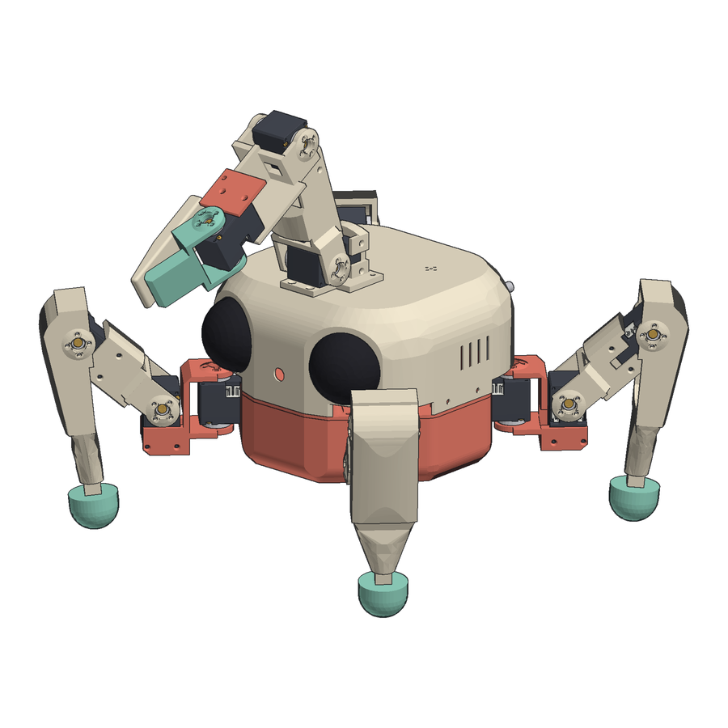
The short answer
Do not build v0.4. Three separate reviews found 52 problems in it. Five could hurt you or burn a wire. Sixteen more would have stopped the build. v0.5 fixes them.
v0.5 is ready to start, in stages. "Ready" means: every check a computer can do is done, and every check it cannot do is a numbered test with a pass or fail number. Nothing has been printed, wired or switched on yet. The first order is small on purpose: three motors and a test piece prove the risky facts for about $490 before you spend the rest.
What stayed the same
15 motors of the same type. The look: pillow body, cream, coral and mint, two 41 mm black eyes, no smile, no eye rings. Size: 275 x 308 x 252 mm standing. Leg and arm lengths. All 16 poses, checked again for collisions. One camera, microphone and speaker, wifi, 1 GB brain. Every part still fits a 180 x 180 mm printer.
What changed, and why
| Change | Why |
|---|---|
| Ready-made battery pack, charged outside the robot | The old battery meant soldering onto bare lithium cells |
| Main fuse first, then a battery-rated switch, then one fuse per leg | The old switch and thin wires could overheat |
| Motor power goes round the small adapter board | That board is limited to 5 A |
| A hub of lever connectors in the middle of the deck | The motor plug fits nothing else, and now nothing needs soldering |
| New 5 V converter, USB sound card, the right camera and ribbon | The old ones would not work with this brain or this battery |
| Shorter screws, wider gaps, 8 more deck screws | The old screws were longer than their holes. Gaps were tighter than a printer's error |
| Captive nuts for the head shell and the battery door | They get opened often |
| Three new small printed parts: hub tray, fuse shelf, test piece | To hold the wiring, and to check the fit first |
| One visible change: a toggle switch on the back | The only cheap switch with a real battery rating |
Weight is now 1,253 g (was 1,047 g). Standing, getting up and reaching stay well inside what the motors can do. Long walks are the open question: see "Not proven yet".
What is in this pack
| Where | What |
|---|---|
| Findings | All 52 problems, ranked, with proof and the fix |
| Print guide | Every part: which face down, supports, settings, plastic, time. Print the test piece first |
| Wiring | The drawing, every wire, every plug, every pin |
| Build guide | 29 steps with a picture and a check each |
| Test plan | One motor, then one leg, then all, then the battery. Pass and fail numbers |
| Not proven yet | What only a real build can show, and six decisions that are yours |
| Shopping list (a separate sheet) | Exact parts, links, counts with spares, tools, totals, four staged orders |
scorpion_spider_v0.5.zip |
Print files turned the right way up, STEP files, the CAD source, the tools, the three full reviews, and these pages as files |
Do this next
- Read Not proven yet, the part called "Decisions that are yours".
- Check that the brain can be bought, and look at motor set prices (shopping list, top note).
- Place order 1. Nothing else.
- Print the test piece. Do test stage A, then B, then C.
- Only when stage C passes, place the other orders.
If a test fails, the last column of the test plan says what to do. Where it says "tell me", send me the number you measured.
Findings on v0.4
Three separate reviewers checked v0.4: mechanics, electrics, and hardware fit. Each got the files and a checklist, not my opinions. They found 52 problems. I checked the main ones again myself in the CAD.
Levels: Level 1 Danger someone or something can get hurt. Level 2 Breaks the build the robot cannot be finished or will not work. Level 3 Fails later works at first, fails later. Level 4 Annoying slows you down.
Every proof is tagged: Maker document a maker's own document, Measured in CAD measured in the 3D model, Calculated a sum shown here, Open build another open robot that uses the same part, Guess not proven. No guess sits inside a level 1 or level 2 item. The full text of all three reviews, with every link, is in the zip in the folder reviews.
Level 1: Danger
1. The power switch has no battery rating, and the fuse sat after it Level 1 Danger Fixed in v0.5
- Proof. v0.4 lists "mini rocker switch" with no maker or rating Measured in CAD. A data sheet for that size class gives 3 A at 250 V mains and no battery figure at all (phippselectronics.com). Walking pulls 3.3 A through it, all motors jammed 30 A Calculated. The 10 A fuse can pass 13.5 A for ten minutes Maker document (farnell.com). At 13.5 A the contact makes 13.5 x 13.5 x 0.05 ohm = 9.1 W inside a part the size of a fingernail Calculated. v0.4 wired battery, then switch, then fuse, so a short at the switch was not fused.
- Fix. Fuse first, right after the battery plug. Then a switch with a battery rating: Cole Hersee 5582, 25 A at 12 V DC, screw terminals. +$2.50, +25 g.
2. All motor current ran through a board limited to 5 A Level 1 Danger Fixed in v0.5
- Proof. The bus adapter's maker gives 5 A as its limit Maker document (docs.waveshare.com). Motor current: walking 3.3 A, doubled for speeding up 6.6 A, every motor at its rated load 15 x 0.9 = 13.5 A, all jammed 15 x 2.0 = 30 A Calculated Open build (github.com).
- Fix. Power goes from the hub straight to the motors. The board carries data only. $0.
3. The thin motor leads had no protection of their own Level 1 Danger Fixed in v0.5
- Proof. One leg is three motors on one thin lead. Three jammed motors pull 3 x 2.0 = 6.0 A, and 6.8 A on a full pack Calculated. The plug's contacts are rated 2 A. The only fuse was 10 A, far above that. A thin lead at 6.8 A heats by 70 to 177 C in 5 s Calculated.
- Fix. One 3 A fuse per chain: it opens in 5 s or less at 6 A Maker document. Plus a 1.5 A limit stored in every motor (the value another open robot uses on this motor Open build). About +$14, +50 g.
4. The battery was not a real part, and building it meant soldering onto bare lithium cells Level 1 Danger Fixed in v0.5
- Proof. v0.4 lists "2 x 18650 cells with a protection board" and a "2S USB-C charge board" with no maker and no part number Measured in CAD. So nothing could be checked: cell current, cut-off current, or whether the two cells are kept level. Joining loose cells needs a spot welder or solder on bare cells. A spring holder's leads are 24 AWG, good for 3.5 A Maker document (memoryprotectiondevices.com).
- Fix. A ready-made 2-cell pack with a plug (ZOHD Lionpack 3500 mAh, 10 A cells, 108 g), charged outside the robot on a proper balance charger. The charge board and its USB-C hole in the chassis are gone. Pack +$1 against v0.4's battery lines. Charger $40, once.
5. First switch-on was from the battery, with all 15 motors and no limits Level 1 Danger Fixed in v0.5
- Proof. v0.4's build order fits the battery and then says "first power-up" Measured in CAD. No step tests one motor first. The parts list has no test supply. A 10 A fuse lets 10 A x 8.4 V = 84 W into a wiring mistake Calculated. One motor's stall torque is 15 kg cm: on a fingertip 1 cm from a joint that is 15 kg Calculated Open build.
- Fix. A stepped test plan: one motor, then one leg, then all, on a supply with a current limit. Limits are stored in each motor before it is ever bolted on. A tested tool does it (
servo_tool.py). Supply about $50, once.
Level 2: Breaks the build
| No. | Problem | Proof | Fix in v0.5 | Cost |
|---|---|---|---|---|
| 6 | All 64 screws into the motor cases were longer than their holes Level 2 Breaks the build Fixed in v0.5 | Holes are 3.5 mm deep on one face, 4.5 mm on the other Measured in CAD (Feetech's model). M2 x 8 screws reached 5.0 to 6.0 mm in Calculated. | Flat-head M2 x 5 (2.4 mm in), pan-head M2 x 6 (3.0 and 4.0 mm in) | $0 |
| 7 | The 120 fork screws ended exactly on the motor case, so joints could jam Level 2 Breaks the build Fixed in v0.5 | Screw tip at 11.5 mm, case face at 11.5 mm: gap 0.0 Measured in CAD Calculated | Screw seats raised 0.6 mm. Tip now 0.6 mm clear | $0 |
| 8 | Fork arms ran 0.10 mm from the pocket walls, and 0.00 mm once screwed tight Level 2 Breaks the build Fixed in v0.5 | 14.6 against 14.5 mm Measured in CAD. A printer is accurate to about 0.2 mm Maker document (help.prusa3d.com) | Walls thinned to 2.35 mm: gap 0.40 mm when tight | $0, -2 g |
| 9 | Sliding fits of 0.10 to 0.25 mm, less than printer error Level 2 Breaks the build Fixed in v0.5 | Motor in pocket 0.15 mm a side, fork on horn 0.10, door 0.25 Measured in CAD | All 0.25 mm or more. Door 0.5. A test piece is printed first | $0 |
| 10 | Two shoulder screws hit the shoulder motor Level 2 Breaks the build Fixed in v0.5 | Screw head overlaps the motor by 5 mm3 Measured in CAD | Those two are now flat-head, sunk flush | $0 |
| 11 | Two deck screws sat under circuit boards Level 2 Breaks the build Fixed in v0.5 | Screw at (36.4, 44.8) inside a board pocket Measured in CAD | New deck layout. A screwdriver reaches all 22 deck screws; eight of them once the hub tray and fuse shelf are lifted off Measured in CAD | $0 |
| 12 | The motor plug fits nothing on the parts list. The "5-way splitter" is not a real part Level 2 Breaks the build Fixed in v0.5 | Motor plug pins are 2.0 mm apart, the adapter's sockets 2.5 mm Maker document (Feetech and Waveshare pages) | Hub of lever connectors. Five motor leads are cut to feed it | +$18 |
| 13 | The 5 V converter dropped out on a low battery, and needed soldering Level 2 Breaks the build Fixed in v0.5 | It needs 6.0 V plus headroom in; the pack sags to 5.8 V Maker document (pololu.com) Calculated | Hobbywing UBEC 3A: works down to 5.5 V, has leads | -$2 |
| 14 | The microphone board has no driver for this brain Level 2 Breaks the build Fixed in v0.5 | No driver or setup file exists for the Radxa's chip Maker document (hardware review H-03) | USB sound card (needs no driver) on a small USB hub | +$5 |
| 15 | That board also covered all 40 pins, so the motion sensor could not connect Level 2 Breaks the build Fixed in v0.5 | 40-pin board on a 40-pin header Measured in CAD | Pins are free. Sensor plugs in through a press-on adapter | +$3 |
| 16 | The battery bay was too short for a real pack Level 2 Breaks the build Fixed in v0.5 | Bay 68 mm, real pack 72 mm Measured in CAD Maker document | Bay takes packs up to 74 x 43 x 24 mm | $0 |
| 17 | There was no wiring design Level 2 Breaks the build Fixed in v0.5 | No wire list, sizes, lengths or plugs in v0.4 Measured in CAD | See the Wiring page | |
| 18 | The camera ribbon was the wrong type Level 2 Breaks the build Fixed in v0.5 | Brain socket is 22-pin, camera is 15-pin Maker document (docs.radxa.com) | The right ribbon is on the list | +$6 |
| 19 | Feetech's Python package cannot drive this motor model Level 2 Breaks the build Fixed in v0.5 | The package has no class for this motor family; its ready-made move command writes zero into the current-limit address Measured in CAD (package source) | servo_tool.py, tested on a software model of the bus |
$0 |
| 20 | The brain was out of stock at every seller I could read Level 2 Breaks the build Test step | Sold out at two sellers on 18 Nov 2026 | Stage 0 of the shopping list: check stock first. The 2 GB board fits the same posts | +$7 if 2 GB |
| 21 | The real cost is not $500 Level 2 Breaks the build Test step | Parts about $745 at the prices I could read. With printer, plastic, tools and charger about $1,375, before shipping and duty Calculated | Your decision. Orders are staged so you can stop after any stage. A 15-motor set from Feetech's own Alibaba store was $275 in v0.4's list (I could not open that page): it would cut $160 |
Level 3: Fails later
| No. | Problem | Proof | What v0.5 does |
|---|---|---|---|
| 22 | Walking loads are above the motors' everyday rating | Two legs carrying the robot: 5.9 kg cm on a hip lift motor. Rated 3.7, stall 15 Calculated Measured in CAD at 1,253 g | Test step F5 to F7 measure heat. Keep each foot within 30 mm of its hip. A narrower stance would fix it but changes the look: not done |
| 23 | Each hip motor is held by its last 10 to 13 mm | Forces there are about 10 times the foot load Calculated | Fixed in v0.5 Eight more deck screws beside the hips. +13 g |
| 24 | A stiff landing from 5 cm reaches motor stall | Calculated | Test step F10, F11. Soft landings are a software job |
| 25 | No end stops | A software slip drives parts together at full force Measured in CAD | Fixed in v0.5 Angle limits stored inside every motor, 3 to 5 degrees short of contact |
| 26 | Head-shell screws cut into plastic and will be opened often | Measured in CAD | Fixed in v0.5 Captive nuts and machine screws |
| 27 | Battery door screws stood 1.8 mm proud beside the battery leads | Measured in CAD | Fixed in v0.5 Flat-head screws into captive nuts. Nothing sharp inside |
| 28 | Feet were 0.1 mm loose on their pegs | Measured in CAD | Fixed in v0.5 Socket 0.2 mm smaller, plus a drop of glue. Test step F12 |
| 29 | Plain PLA can soften near warm motors | Motors may reach 60 C Maker document | Fixed in v0.5 PETG for every part that holds a motor |
| 30 | A full pack is 8.4 V, exactly the motors' top limit | Maker document | Fixed in v0.5 Charge to 4.10 V per cell (8.2 V) |
| 31 | No capacitor on the motor supply | Measured in CAD | Fixed in v0.5 Two 1,000 uF capacitors in the hub |
| 32 | The pack has no low-voltage cut-off | Maker document | Fixed in v0.5 $5 alarm on the pack. Test step F9 for the software stop at 6.6 V |
| 33 | 10 A cells run warm if walking is hard | Calculated | Test step F6, F7. A stronger pack fits the same bay |
| 34 | Wire paths were not designed; five places are tight | Measured in CAD | Fixed in v0.5 Hub in the middle of the deck. Reach checked. Test step C2 |
| 35 | Camera type untested on this brain | Open build | Fixed in v0.5 Raspberry Pi Camera V2, proven on this brain by another open robot. +$11 |
| 36 | The brain runs hot in a closed shell | Chip slows itself at 85 C Maker document | Heatsink added. Test step E7 |
| 37 | Microphones sat 37 mm below their holes | Measured in CAD | Fixed in v0.5 Sound card is taped right under the holes. Test step F14 |
| 38 | Motion sensor loose, direction not written down | Measured in CAD | Fixed in v0.5 Two screws. Direction is in the build guide |
| 39 | One USB port gives 0.5 A for everything | Maker document | Test step D5 |
| 40 | Wifi untested inside the shell | Test step E8 | |
| 41 | No spare motor leads | Measured in CAD | Fixed in v0.5 Five spares on the list |
| 42 | Wiring adds weight | Robot is now 1,253 g, was 1,047 g Measured in CAD | Loads re-run at the new weight. Test step E6 |
Level 4: Annoying
| No. | Problem | What v0.5 does |
|---|---|---|
| 43 | Four parts need print supports the old README said they did not | Fixed in v0.5 Print guide |
| 44 | Nothing said how a fork gets over the two screw heads on a motor | Fixed in v0.5 Build guide step 9 |
| 45 | All three wires of a motor lead are black | Fixed in v0.5 Tape them before cutting. Tests B2 and B4 check |
| 46 | Charging means opening the belly door | No change needed Four screws. Safer than charging inside |
| 47 | Memory card and USB ports need the head shell off | No change needed Do daily work over wifi. A hole in the shell would change the look |
| 48 | Arm lead too short to lay the shell down | Fixed in v0.5 Lead lengthened by 150 mm |
| 49 | Microphones share a box with motors and a converter | Test step F14 |
| 50 | Pinch points at the joints | Build guide warning. Low torque limit for all desk tests |
| 51 | Two reach poses bring the claw within 0.4 mm of the floor | No change needed Same as v0.4. They do not touch |
| 52 | Training needs a robot description file and real motor data | For later Not in this job. Test E6 gives the masses |
What I checked and left alone
Same as v0.4, on purpose:
- 15 motors, same motor. Standing needs 1.4 kg cm per hip lift motor against a rating of 3.7 Calculated. No stronger motor is needed to stand, get up or reach.
- Size, shape and look. Pillow body, cream, coral and mint, two 41 mm black eyes, no smile, no eye rings.
- Leg and arm lengths, and all 16 poses. All 16 pass the collision check again in v0.5 Measured in CAD.
- Balance. 84 mm or more to spare on four feet, with 100 g in the claw at full reach Calculated.
- Fork strength. 2.6 times spare at motor stall Calculated.
- One camera, wifi, 1 GB brain.
- Every part still fits a 180 x 180 mm printer bed.
Money
| v0.4 said | v0.5 | |
|---|---|---|
| Parts inside the robot, with spares | $500 target | $757 |
| Printer, plastic, glue | not counted | $295 |
| Tools, charger, test supply | not counted | $321 |
| Sum of the shopping list | $1,373 | |
| Shipping and import duty | not counted | $60 to $220 Guess |
| First robot, all in | about $1,430 to $1,590 |
$471 of the $1,373 is my estimate, where a seller's price could not be read. Each such line is marked in the sheet.
The split, links and exact counts are in the shopping list sheet.
Print guide
You have no printer yet. The shopping list names one that fits every part: the Bambu Lab A1 mini (bed 180 x 180 mm). The largest part is 144 x 138 mm. The tallest is 120 mm.
Every file in the zip folder stl is already turned the right way up. Load it, do not rotate it, and press "lay flat" only if the slicer asks. (Slicer: the free program that turns a shape into printer moves. For this printer it is Bambu Studio.)
Settings for every part
| Setting | Value | Why |
|---|---|---|
| Nozzle | 0.4 mm | Standard |
| Layer height | 0.20 mm | Standard. Another open robot with this motor prints at the same Open build |
| Walls (also called perimeters) | 3, or 4 where the table says | 4 walls on every part that carries a leg or arm load |
| Fill (infill) | 15%, pattern "gyroid" | |
| Top and bottom layers | 5 | 1.0 mm of solid skin |
| Elephant foot compensation | 0.2 mm | The first layer flares out. This trims it, so motors slide into their pockets |
| Supports | Off, unless the table says | "Build plate only" means supports that start on the bed, never on the part |
| Bed and nozzle temperature | The slicer's own preset for the plastic you load |
Plastic. PETG for every part that holds a motor: plain PLA can soften at 60 C, and the motors may reach that Maker document. The head shell may be PLA (it looks best) for indoor use. Never leave the robot in a hot car. Feet are TPU 95A, a soft plastic. Dry the TPU and PETG spools if they have been open for weeks: wet plastic prints rough and weak.
Table of parts
| Part | Count | File | Plastic and colour | Which face is down | Supports | Walls | Fill | Brim | Size on the bed, mm | Plastic each | Time each |
|---|---|---|---|---|---|---|---|---|---|---|---|
| Test piece (print first) | 1 | test_piece_x1.stl |
PETG, any colour | Flat base down | None | 3 | 15% | none | 75 x 39 x 26 | 15 g | 1.4 h |
| Hip bracket | 4 | hip_x4.stl |
PETG, coral | On its side | Yes: only under the upper wall of the motor pocket | 4 | 15% | 5 mm | 50 x 46 x 28 | 12 g | 1.1 h |
| Thigh | 4 | thigh_x4.stl |
PETG, cream | Standing on its open end, fork up | Yes: "build plate only" | 4 | 15% | 8 mm | 30 x 39 x 58 | 17 g | 1.5 h |
| Shin | 4 | shin_x4.stl |
PETG, cream | Standing on its heel, foot peg up | None | 4 | 15% | 8 mm | 29 x 39 x 120 | 29 g | 2.6 h |
| Foot | 4 | foot_x4.stl |
TPU 95A, mint | Flat face down | None | 3 | 30% | none | 27 x 27 x 20 | 6 g | 0.7 h |
| Chassis | 1 | tub_x1.stl |
PETG, coral | Belly down | Yes: "build plate only" (under the two bars) | 3 | 15% | none | 144 x 138 x 38 | 82 g | 5.9 h |
| Deck | 1 | deck_x1.stl |
PETG, coral | Flat side down, posts up | None | 3 | 15% | none | 144 x 138 x 36 | 50 g | 3.6 h |
| Battery door | 1 | battery_door_x1.stl |
PETG, coral | Flat plate down | None | 3 | 15% | none | 47 x 90 x 12 | 13 g | 1.2 h |
| Hub tray | 1 | hub_tray_x1.stl |
PETG, coral | Flat plate down, walls up | None | 3 | 15% | none | 98 x 37 x 14 | 9 g | 0.8 h |
| Fuse shelf | 1 | shelf_x1.stl |
PETG, coral | Flat plate down, rim up | None | 3 | 15% | none | 114 x 37 x 5 | 9 g | 0.8 h |
| Head shell | 1 | lid_x1.stl |
PLA or PETG, cream | Roof down | None | 3 | 15% | none | 144 x 138 x 62 | 68 g | 4.9 h |
| Shoulder mount | 1 | shoulder_mount_x1.stl |
PETG, cream | Base down | Yes: everywhere | 4 | 15% | none | 44 x 46 x 29 | 11 g | 1.0 h |
| Upper arm | 1 | upper_arm_x1.stl |
PETG, cream | Standing on its open end, fork up | Yes: "build plate only" | 4 | 15% | 8 mm | 32 x 39 x 81 | 23 g | 2.1 h |
| Forearm with fixed finger | 1 | forearm_x1.stl |
PETG, cream | Flat side down | None | 4 | 15% | none | 130 x 43 x 26 | 26 g | 2.4 h |
| Palm cap | 1 | palm_cap_x1.stl |
PETG, coral | Flat | None | 3 | 15% | none | 26 x 28 x 2 | 2 g | 0.2 h |
| Moving finger | 1 | finger_x1.stl |
PETG, mint | On its side, blade down | None | 4 | 15% | none | 56 x 39 x 19 | 10 g | 0.9 h |
| Eye | 2 | eye_x2.stl |
PLA, glossy black | Flat side down | None | 3 | 15% | none | 41 x 41 x 17 | 7 g | 0.6 h |
- Brim: a flat skirt round the first layer that holds a tall, narrow part down. Cut it off afterwards.
- Plastic per part is from the 3D model Calculated: 1.2 mm solid skin and 15% fill, plus 15% for 4-wall parts. Time is a Guess at 8 to 14 g per hour. Your slicer shows the real figures before each print.
- Total: about 590 g of plastic and about 50 hours of printing for 29 pieces. Three 1 kg spools leave plenty for reprints.
Print in this order
- The test piece. 15 g, about 1.5 hours. Do tests A1 and A2 with it and one motor. If a fit is wrong, one number in
parts.pychanges and all files are exported again. Do not print anything else until A1 to A5 pass. - One leg: one hip bracket, one thigh, one shin, one foot. Build it and do stage C of the test plan.
- Everything else.
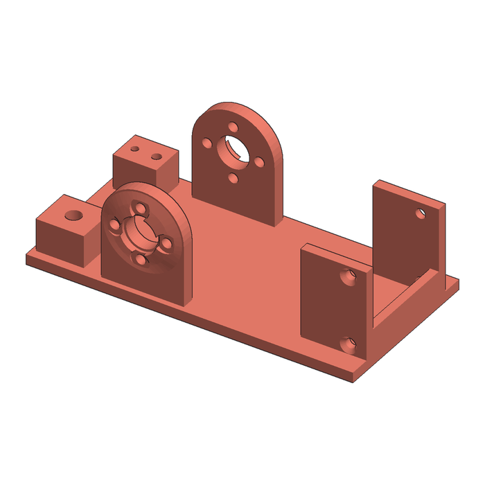
Part by part: what to watch
- Chassis. Two bars cross the battery opening, 2.8 mm above the bed and 56 mm long. They need supports ("build plate only"). The four slots for the M3 nuts print without support. A 144 mm part can lift at the corners: clean the bed, keep draughts away.
- Deck. A 2 mm plate with posts and the two camera rails standing 36 mm tall. Watch the first layer: a plate this size can curl.
- Thigh and upper arm. They stand on the open mouth of the motor pocket, which is exactly where the first layer flares. Elephant foot compensation matters most here.
- Shin. 120 mm tall on a 29 x 39 mm foot. The brim keeps it from rocking loose.
- Hip bracket. Lies on its side. The upper wall of the motor pocket hangs in the air: support only that.
- Shoulder mount. Small. Supports everywhere. Clean the motor pocket well afterwards.
- Head shell. Prints roof down. The roof's edge starts at 45 degrees: slow the first 10 mm if the surface looks rough. The eye seats and switch hole need no support.
- Feet. TPU prints slowly. Use the slicer's TPU preset. The socket is 0.2 mm smaller than the shin's peg on purpose: the foot stretches on.
- Eyes. Glossy black PLA, flat side down. For a mirror finish, sand lightly and clear-coat. Or print in any plastic and paint.
- Hub tray, fuse shelf, battery door, palm cap. Flat and easy.
After printing, for every part
- Cut away supports and brim with the flush cutters. Wear the safety glasses: bits fly.
- Check each screw hole is open. Push a 1.5 mm pin or the tip of a small screwdriver through.
- Try the motor in every pocket before you start screwing. It must slide in by hand. If it does not, scrape the first-layer flare from the pocket mouth with a blade. Do not force a motor into a pocket.
If a fit is wrong
All sizes live in one file, source/parts.py (and source/body.py for the body). The numbers you may need:
| Name | Now | What it sets |
|---|---|---|
CHK_IN |
11.75 | Half the gap between the two walls of a motor pocket. The motor is 23.0 mm, the gap 23.5 |
ARM_IN |
14.75 | Half the gap between the two arms of a fork. Across both horns is 29.0 mm, the gap 29.5 |
M2_PILOT |
0.85 | Radius of the hole an M2 tapping screw cuts into |
M25_PILOT |
1.05 | Same for M2.5 |
NUT_AF in body.py |
5.5 | Width of an M3 nut slot |
Then run python export.py --files in the source folder (needs Python with the cadquery package). Or send me the measurements and I will do it.
Wiring
No soldering anywhere. Every joint is a ready-made plug, a screw, or a lever connector.
Words used here
- Pack: the battery. Two lithium-ion cells in one wrapped block, 6.6 to 8.4 V.
- Motor: one of the 15 Feetech HD-1910-C001 servo motors. Each has two identical 3-pin sockets, so motors link one to the next.
- Chain: three motors linked in a row. There are five chains: four legs and the arm.
- Lever connector: a small clear block (Wago 221). Lift the orange lever, push a bare wire end in, close the lever. All wires in one block are joined.
- Hub: the printed tray in the middle of the deck that holds eight lever connectors. All power and data wires meet there.
- Bus adapter: the small board that turns USB into the motors' data line.
- 5 V converter: turns battery voltage into the 5 V the brain needs (Hobbywing UBEC).
- Brain: the Radxa Zero 3W computer.
- AWG: wire thickness. A smaller number is a thicker wire. 16 AWG is about 1.3 mm of copper.
The drawing
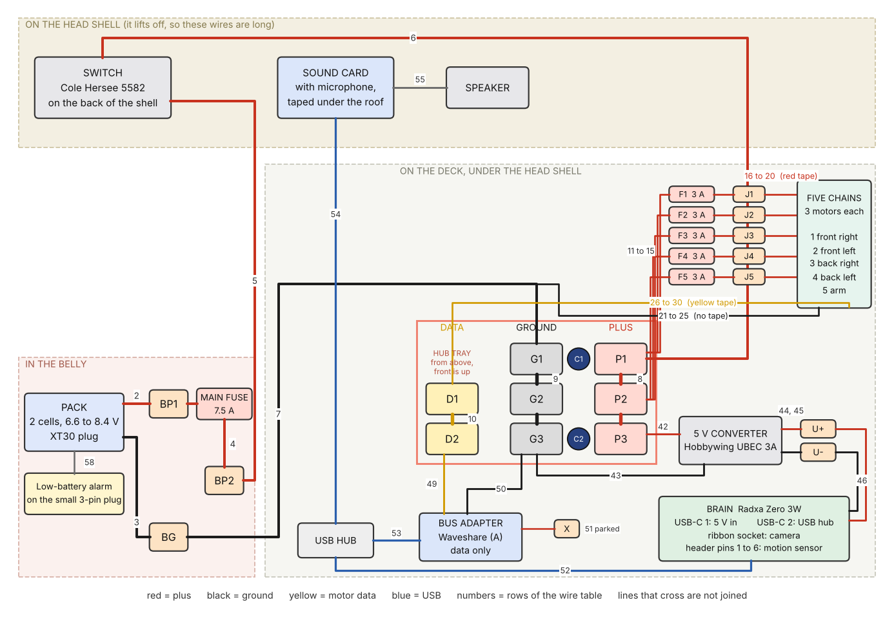
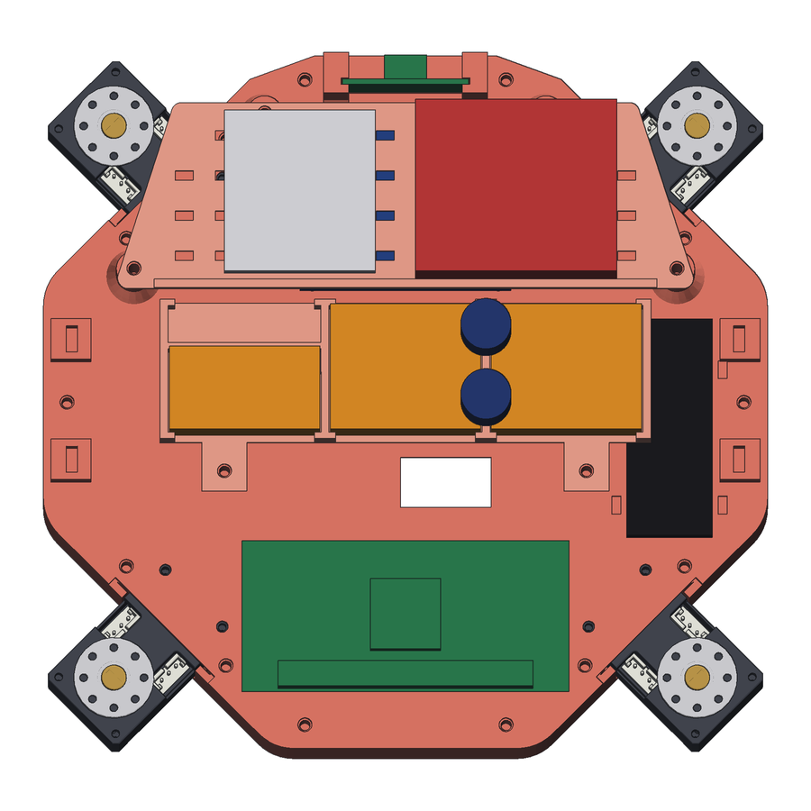
How power flows, and what protects what
- Pack to its XT30 plug.
- Main fuse, 7.5 A, first thing after the plug. It protects every wire after it.
- Switch on the back of the head. Off means the motors, the converter and the brain are all dead.
- Hub, plus bay. From here power goes six ways: five chains and the 5 V converter.
- One 3 A fuse per chain. It protects the thin motor wires.
- Inside each motor: a current limit of 1.5 A and an angle limit, stored by the setup tool.
Which part cuts power first, case by case Calculated Maker document (fuse times: Littelfuse MINI 297, farnell.com):
| What goes wrong | Current | What opens, and how fast |
|---|---|---|
| One leg jammed, motor limits working | up to 4.5 A (3 x 1.5 A) | The motors let go by themselves. Test B7 measures the time. |
| One leg jammed, motor limits not working | 6.0 to 6.8 A | That chain's 3 A fuse, in 0.15 to 5 s |
| All 15 motors jammed | 32 to 36 A | Main fuse, in 0.25 s or less |
| Bare plus wire touches bare ground wire after the main fuse | about 80 A | Main fuse, in 0.1 s or less |
| Walking too hard for too long (above 10 A) | 10 A | Main fuse, within 10 minutes |
Not protected by any fuse: the pack's own lead and the short pigtail before the main fuse, about 200 mm in all. Keep them away from screws and sharp edges. Never let the two pack wires touch.
Table of every wire
Lengths are cut lengths. Cut, fit, then trim. "Bare 11" means strip 11 mm of insulation. "Folded 22" means strip 22 mm and fold the bare copper back on itself, because the wire is thin.
Connector names: BP1, BP2, BG are in the belly. P1, P2, P3 (plus), G1, G2, G3 (ground) and D1, D2 (data) stand in the hub tray. J1 to J5 join a chain fuse to its chain. U+ and U- join the converter to the brain's power lead. A1, A2, A3 lengthen the arm's lead. X parks one unused wire.
| No. | From | To | Thickness | Length mm | Colour | End 1 / End 2 |
|---|---|---|---|---|---|---|
| 1 | Pack | Pack's XT30 plug | as supplied | about 100 | red, black | fitted |
| 2 | XT30 pigtail, plus | BP1 | 16 AWG | 100 | red | XT30 plug / bare 11 |
| 3 | XT30 pigtail, minus | BG | 16 AWG | 100 | black | XT30 plug / bare 11 |
| 4 | BP1 | BP2, through the main fuse holder (7.5 A) | holder's own wire | as supplied | as supplied | bare 11 / bare 11 |
| 5 | BP2 | Switch, terminal 1 | 16 AWG | 300 | red | bare 11 / ring terminal |
| 6 | Switch, terminal 2 | P1 | 16 AWG | 300 | red | ring terminal / bare 11 |
| 7 | BG | G1 | 16 AWG | 200 | black | bare 11 / bare 11 |
| 8 | P1 to P2, P2 to P3 | 16 AWG | 40 each | red | bare 11 both ends | |
| 9 | G1 to G2, G2 to G3 | 16 AWG | 40 each | black | bare 11 both ends | |
| 10 | D1 to D2 | thin wire offcut | 40 | yellow tape | folded 22 both ends | |
| 11 to 15 | P1 (chains 1, 2), P2 (chains 3, 4, 5) | J1 to J5, each through a chain fuse holder (3 A) | holder's own wire | as supplied | as supplied | bare 11 / bare 11 |
| 16 to 20 | J1 to J5 | First motor of each chain, middle pin (power) | motor lead | 140 | black with red tape | folded 22 / motor plug |
| 21 to 25 | G1 (chains 1, 2), G2 (chains 3, 4, 5) | First motor, outer pin (ground) | motor lead | 140 | black, no tape | folded 22 / same plug |
| 26 to 30 | D1 (chains 1, 2, 3), D2 (chains 4, 5) | First motor, outer pin (data) | motor lead | 140 | black with yellow tape | folded 22 / same plug |
| 31 to 40 | Motor to motor, two per chain | motor lead, whole | 150 | black | motor plug both ends | |
| 41 | Arm chain only: A1, A2, A3 lengthen wires 20, 25 and 30 | thin wire offcut | 150 each | taped to match | folded 22 both ends | |
| 42 | 5 V converter, input plus | P3 | as supplied | as supplied | red | fitted / bare 11 |
| 43 | 5 V converter, input minus | G3 | as supplied | as supplied | black | fitted / bare 11 |
| 44 | 5 V converter, output plus (cut its plug off) | U+ | as supplied | as supplied | red | fitted / bare 11 |
| 45 | 5 V converter, output minus | U- | as supplied | as supplied | black or brown | fitted / bare 11 |
| 46 | U+ and U- | Brain, port USB-C 1 | USB-C power pigtail | cut to 150 | red, black | bare 11 / USB-C plug |
| 47 | Capacitor 1 | P1 (long leg) and G1 (leg by the stripe) | its own legs | legs straight into the connectors | ||
| 48 | Capacitor 2 | P3 (long leg) and G3 (leg by the stripe) | its own legs | legs straight into the connectors | ||
| 49 | Bus adapter, motor socket, data pin | D1 | half of a Waveshare cable | 150 | yellow tape | 3-pin plug / folded 22 |
| 50 | Bus adapter, motor socket, ground pin | G3 | same half cable | 150 | no tape | same plug / folded 22 |
| 51 | Bus adapter, motor socket, power pin | X, alone | same half cable | 150 | red tape | same plug / parked |
| 52 | Brain, port USB-C 2 | USB hub | hub's own lead, or a short USB-C cable | 150 | USB-C | |
| 53 | USB hub | Bus adapter | USB-C cable | 150 | USB-C both ends | |
| 54 | USB hub | Sound card (under the roof) | USB-C cable | 300 | USB-C both ends | |
| 55 | Sound card | Speaker | speaker's own lead | as supplied | 2-pin plug | |
| 56 | Brain header pins 1 to 6 (press-on adapter) | Motion sensor | 4-wire sensor cable | 100 | small 4-pin plug both ends | |
| 57 | Brain camera socket | Camera | ribbon, 22-pin to 15-pin | 150 | ribbon | |
| 58 | Pack's small 3-pin plug | Low-battery alarm (in the robot) or charger (on the desk) | as supplied | 3-pin plug |
Wires 5, 6 and 54 are long on purpose: the head shell carries the switch and the sound card, and must lift off and lie beside the robot.
Chain order. Hub, then hip turn motor, then hip lift motor, then knee motor. For the arm: hub, shoulder, elbow, claw. Chain 1 = front right leg, 2 = front left, 3 = back right, 4 = back left, 5 = arm.
Do the leads reach? Measured in CAD From the hub to a hip turn motor's socket is 71 mm (front legs) and 80 mm (back legs) in a straight line. A cut lead gives 140 mm. Inside a leg the runs are 40 mm and 59 mm at the widest joint angle, against a 150 mm lead. Shoulder to elbow is 85 mm, elbow to claw 77 mm.
Table of every connector on the brain
| Where on the brain | Goes to | Notes |
|---|---|---|
| USB-C 1 (power in) | 5 V converter, wire 46 | The only power input. 5 V only. Maker document docs.radxa.com |
| USB-C 2 (host) | USB hub, then bus adapter and sound card | The port gives 0.5 A at most for everything on the hub. Maker document dl2.radxa.com |
| Camera socket (22-pin ribbon) | Camera | |
| Card slot | microSD card with the system | |
| Header pins 1 to 6 | Motion sensor, through the press-on adapter (SparkFun Qwiic SHIM) | Pin 1 = 3.3 V, pins 2 and 4 = 5 V, pin 3 = data, pin 5 = clock, pin 6 = ground. I2C bus 3. Never feed power in here. |
| Header pins 8 and 10 | Nothing. Left free | The brain's rescue console, if wifi ever fails. |
| All other header pins | Nothing | Every header signal is 3.3 V. More than 3.63 V on a pin can kill the brain. Maker document same Radxa page |
The motor plug
Maker document Feetech's page: ftservo.github.io
- 3 pins, 2.0 mm apart. The middle pin is power. One outer pin is data, the other is ground.
- All three wires are black. Before you cut a lead, mark the wires with tape (build guide, step 2). Tests B2 and B4 then check every lead with the meter before a motor is plugged in.
- The plug does not fit the bus adapter's sockets (those are 2.5 mm). That is why the adapter gets its own cut cable into the hub.
Motor numbers
Every motor leaves the factory as number 1. The setup tool gives each its own number, one motor at a time.
| Chain | Turn | Lift | Knee |
|---|---|---|---|
| 1 Front right | 11 | 12 | 13 |
| 2 Front left | 21 | 22 | 23 |
| 3 Back right | 31 | 32 | 33 |
| 4 Back left | 41 | 42 | 43 |
Arm: shoulder 51, elbow 52, claw 53. Write the number on each motor with a marker.
The numbers behind it
| Part | Limit, with source | Walking | All motors jammed |
|---|---|---|---|
| Pack cells (Sanyo NCR18650GA) | 10 A Maker document | 4.1 to 7.4 A Calculated | Main fuse opens first |
| XT30 plug | 15 A steady, 30 A peak | pass | 36 A for 0.25 s |
| 16 AWG wire | 22 A | pass | pass |
| Main fuse 7.5 A | holds 5.6 A all day | 55 to 99% | opens |
| Switch (Cole Hersee 5582) | 25 A at 12 V DC | pass | pass |
| Lever connectors (Wago 221) | 20 A | pass | pass |
| Chain fuse 3 A | holds 2.25 A all day | 0.9 to 1.9 A per leg | opens |
| Motor plug contact | 2 A | 0.9 to 1.9 A | cut by motor limit, then chain fuse |
| 5 V converter | 3 A at 5 V | 1.0 A typical, 2.4 A peak Guess | pass |
Sums Calculated: at rest 15 x 0.02 A + 0.8 A for the brain = 1.1 A. Walking = 4.1 A, doubled for speeding up and friction = 7.4 A. All jammed at a full pack = 15 x 2.27 A + 1.7 A = 35.7 A. Run time at 4.1 A: 0.8 x 3.5 Ah / 4.1 A = 41 minutes.
Low battery: with 0.11 ohm in the path, 7.4 A pulls a 6.6 V pack down to 5.8 V Calculated. The converter needs 5.5 V. So the software must sit the robot down at 6.6 V, and the alarm is set to 3.3 V per cell.
Charging
The pack comes out to charge. Never charge it inside the robot.
- Switch off. Take the belly door off (four screws). Unplug the pack's big plug and its small 3-pin plug.
- On the charger choose: LiIon, 2 cells (2S), 1.5 A, Balance charge, end voltage 4.10 V per cell.
- Plug in both pack plugs. Charge on a hard surface, where you can see it. About 3 hours.
- Stop and do not use the pack if it gets hot to the touch or swells.
Why 4.10 V and not 4.20 V: a full 8.4 V pack sits exactly on the motors' top limit Maker document. 8.2 V leaves a margin.
Build guide
For someone who has never built anything. Do the steps in order. Each step ends with a Check. If a check fails, stop and fix it before the next step.
Before you start
Safety, in four lines
- The battery. Never let its two wires touch. Never charge it inside the robot. Never use a pack that is hot, swollen or dented. Keep it out of the robot until step 28.
- The motors. One motor can press with 15 kg at 1 cm from its joint. Keep fingers out of joints whenever power is on. Until step 28 the robot stands on a box with its feet in the air.
- Plugs. Plug and unplug motors only with the power off.
- Eyes. Wear the safety glasses when you cut plastic, wire or cable ties.
Words
- Horn: the round disc on a motor's shaft. Each motor has two: the driven horn, and a free-turning one on the back (the idler horn).
- Fork: the two-armed end of a printed part that grips a motor by both horns.
- Pocket: the box-shaped end of a printed part that a motor slides into.
- Tapping screw: a screw that cuts its own thread into plastic. Machine screw: a screw that needs a nut.
- Pan head: a screw head that stands proud, round on top. Flat head: a cone-shaped head that sinks flush.
- Lever connector: the small clear block with orange levers (Wago 221). Lift a lever, push a bare wire end in as far as it goes, press the lever down, pull the wire to check.
- Strip: take the plastic off the end of a wire so the copper shows.
Screws: where each kind goes
| Screw | Count | Where |
|---|---|---|
| M2 x 6 pan-head tapping | 142 | Every fork to its two horns (120). Hip turn motors: 8 up through the chassis, 8 down through the deck. Bus adapter (4). Motion sensor (2) |
| M2 x 5 flat-head tapping | 44 | Through the two walls of every motor pocket, 4 per motor, 11 motors |
| M2.5 x 8 pan-head tapping | 21 | Deck to chassis (14). Fuse shelf (4). Back of the shoulder mount (2). Palm cap (1) |
| M2.5 x 6 pan-head tapping | 6 | Brain (4). Hub tray (2) |
| M2.5 x 8 flat-head tapping | 2 | Front of the shoulder mount |
| M2.5 x 8 pan-head machine screw, with M2.5 nut | 4 | Head shell to deck |
| M3 x 8 flat-head machine screw, with M3 nut | 4 | Battery door |
The golden rule for screws into a motor: never use a longer screw than the table says. A screw that is too long goes through the motor's case into its gears. Tighten every tapping screw until it stops, then no further: plastic threads strip easily.
Part 1. Check the fit
Step 1. Print the test piece and try it on a motor
Print test_piece_x1.stl (print guide). Take one motor. Do tests A1 to A7 in the test plan.
Check: A1 to A7 all pass. Only then print one leg (one hip bracket, one thigh, one shin, one foot).
Part 2. Build the hub on the desk
Everything electrical is built and tested on the desk first, with the bench supply in place of the battery.
Step 2. Mark and cut five motor leads
Each motor comes with one lead: three thin black wires with a plug at both ends. Take five leads.
- Hold a plug with the wires toward you. Put red tape on the middle wire, near the plug. Put yellow tape on the left wire. Leave the right wire bare. Do exactly the same on all five.
- Cut the far plug off each lead, close to that plug. You now have five "hub leads", each 140 mm long with one plug.
- Strip 22 mm from each of the 15 cut ends with the thin-wire strippers. Twist the copper, fold it back on itself to make a double end 11 mm long.
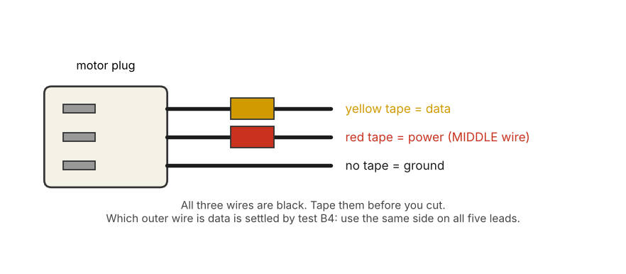
Check: five leads, each with one plug, red tape on the middle wire, yellow on the same outer wire of every lead.
Step 3. Fill the hub tray
Put the printed hub tray on the desk with its two screw tabs toward you.
- Stand eight lever connectors in it, wire holes up: in the left bay D1 (5-way) and D2 (3-way) in the two places nearest you; in the middle bay three 5-way (G1, G2, G3); in the right bay two 5-way (P1, P2) and one 3-way (P3) nearest you. Write the names on them with the marker.
- Cut four pieces of the thick wire, 40 mm each: two red, two black. Strip 11 mm from every end. Bend each into a U.
- Red U from P1 to P2. Red U from P2 to P3. Black U from G1 to G2. Black U from G2 to G3. Use the holes the map shows.
- One thin-wire U (an offcut, both ends folded double) from D1 to D2.
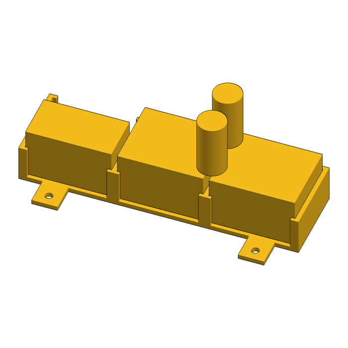
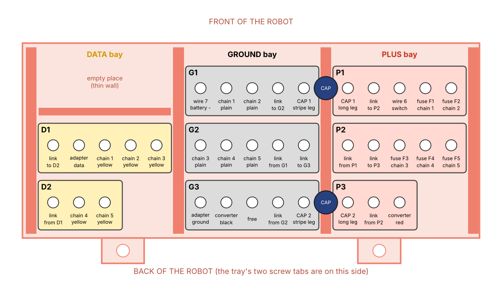
Check: pull every U. None comes out. Nothing joins one bay to another.
Step 4. Capacitors, chain fuses and hub leads
- Capacitors. Each has a long leg (plus) and a short leg beside a stripe printed on the can (minus). Spread the legs to about 10 mm. Capacitor 1: long leg into P1, stripe leg into G1, in the holes next to the wall between the two bays. Capacitor 2 the same into P3 and G3. Stripe leg in the ground bay. Check twice: a capacitor fitted backwards can burst.
- Chain fuses. Take five fuse holders. Each is a loop of wire with a holder in the middle. Cut each loop at its far end, so the holder has two leads. Strip 11 mm from all ten ends. Push a 3 A fuse (violet) into each holder. Label them F1 to F5.
- One lead of F1 and F2 into P1. One lead of F3, F4 and F5 into P2.
- The other lead of each holder goes into its own 2-way connector: J1 to J5.
- Hub leads. For chain 1: red-taped wire into J1, bare (no tape) wire into G1, yellow-taped wire into D1. Chains 2 to 5 the same, using the holes on the map. Label each plug 1 to 5.
Check: every capacitor's stripe is on the ground side. Each hub lead has its red wire in a J connector, never straight in the plus bay.
Step 5. Bus adapter cable and 5 V converter
- Cut one Waveshare cable in half. Keep both halves. On one half, find which wire goes to the pin marked D (data), V and G on the adapter board: plug it into the adapter's motor socket and read the print on the board. Tape D yellow, V red.
- Strip and fold the three ends. D into D1. G into G3. V alone into a 2-way connector marked X. Nothing else ever goes into X.
- The 5 V converter has a small jumper (a plastic cap on pins) marked 5 V / 6 V. Put it on 5 V. Its two input wires: red into P3, black into G3.
- Cut the plug off the converter's output lead. Strip 11 mm. Red into a 2-way connector marked U+, black (or brown) into one marked U-. Do not join the brain's lead yet.
Check: the jumper is on 5 V. U+ and U- each hold one wire only.
Step 6. Power wires, switch and main fuse. First power
- Cut the thick wire: red 300 mm (wire 5), red 300 mm (wire 6), black 200 mm (wire 7). Strip 11 mm from every end.
- Crimp a ring terminal onto one end of wire 5 and one end of wire 6: push the bare copper into the terminal's sleeve, squeeze hard with the crimping pliers, pull to check. Screw one onto each of the switch's two terminals. Wrap each terminal in two turns of electrical tape so no metal shows.
- Wire 6 into P1. Wire 7 into G1.
- Main fuse holder: cut its loop as before, strip both ends, fit a 3 A fuse for now. One lead into a 2-way connector BP1, the other into BP2. Wire 5's free end into BP2.
- You have two XT30 leads that plug into each other. Take either one: red into BP1, black into a 2-way connector BG, together with wire 7's free end. This is the robot's battery lead.
- The other one is the supply lead. Clip the supply's red clip to its red wire and the black clip to its black wire. Keep the two clips apart. Plug the two XT30 leads together only when a test says to switch on.
- Do tests B1, B2 and B3.
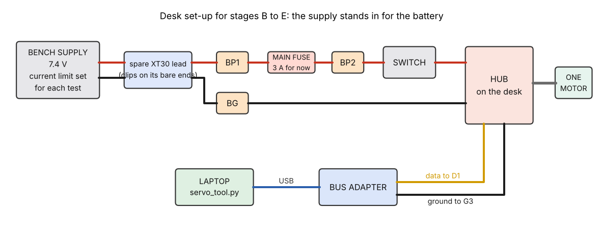
Check: B1, B2 and B3 pass. With the switch on and no motor, the supply shows less than 0.05 A after a few seconds. More than that: switch off at once, a capacitor is backwards.
Step 7. Number and centre every motor
Do tests B4 to B9. One motor on a hub lead at a time. The tool gives each motor its number, stores its safety limits, and turns it to the middle of its range.
Write the number on each motor. Lay the motors out in five rows: 11 12 13, 21 22 23, 31 32 33, 41 42 43, 51 52 53.
Check: 15 motors (or the first 3 if you bought 3), each numbered, each at its middle. From now on do not turn a horn by hand more than you must.
Part 3. One leg
Build one whole leg and test it before you print the rest.
Step 8. Knee motor into the thigh
Motor 13. The thigh is the short link with a pocket at one end and a fork at the other.
- Plug a whole lead into either socket of the motor. Lay its wire in the slot in the pocket's wall.
- One wall of the pocket has a notch cut out of it. Turn the motor so its two sockets will sit in that notch. Slide the motor into the pocket, long end first.
- Four M2 x 5 flat-head screws through the pocket walls, two each side.
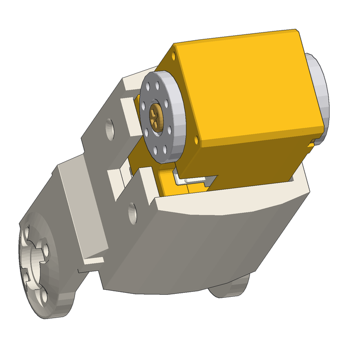
Check: the motor does not rock. The screw heads sit flush. The wire is not trapped.
Step 9. Shin onto the knee motor
A fork cannot pass the screw head in the middle of each horn. So:
- Take out the centre screw of both horns of the knee motor. Do not pull the driven horn off its shaft.
- Hold the shin at about 90 degrees to the thigh. Slide its fork over both horns from the motor's short end.
- Put both centre screws back through the fork's two large holes.
- Turn the shin until four small fork holes line up with four horn holes on each side, as near to 90 degrees as they allow. Eight M2 x 6 pan-head screws, four each side.
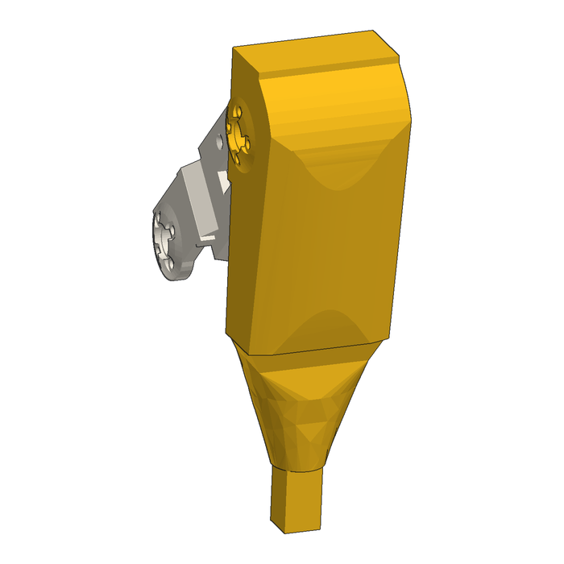
Check: the knee swings freely by hand. Nothing scrapes. No screw tip touches the motor's case.
Step 10. Foot
Put one drop of flexible glue on the shin's square peg. Push the soft foot on until it stops. It is tight on purpose.
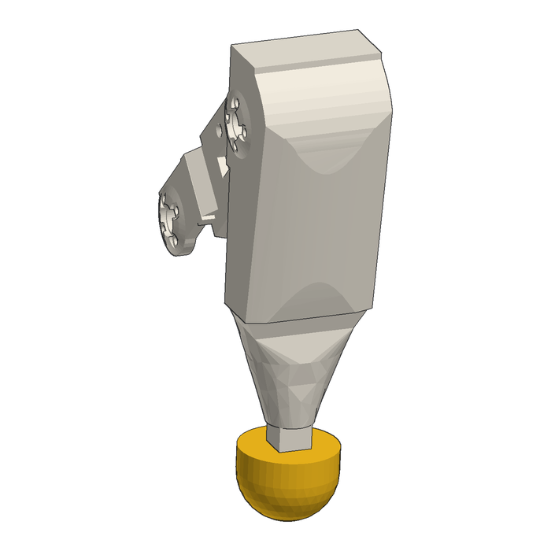
Check: the foot cannot be pulled off by hand after the glue has set (about a day).
Step 11. Lift motor into the hip bracket
Motor 12.
- Plug the free end of the knee's lead into one socket of motor 12. Plug a second whole lead into its other socket.
- Turn the motor so its two sockets sit in the notch of the pocket's wall. Slide it into the hip bracket's pocket, long end down. Pass the second lead out through the bracket's window.
- Four M2 x 5 flat-head screws.
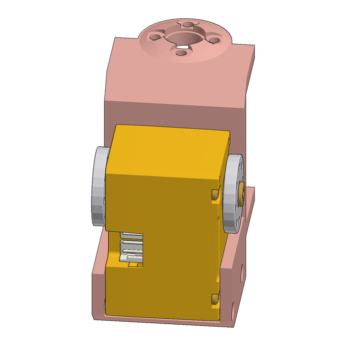
Check: motor firm, heads flush, both leads free.
Step 12. Thigh onto the lift motor. Test the leg
- As in step 9: centre screws out, slide the thigh's fork over the lift motor from above, centre screws back, eight M2 x 6 pan-head screws.
- Plug the bracket's free lead into motor 11, which lies loose on the desk for now. Plug hub lead 1 into motor 11's other socket.
- Do stage C of the test plan. During it, set each joint's zero: hold the knee at 90 degrees (use the corner of a card) and run
zero --id 13. Hold the thigh level with the top of the hip bracket and runzero --id 12.
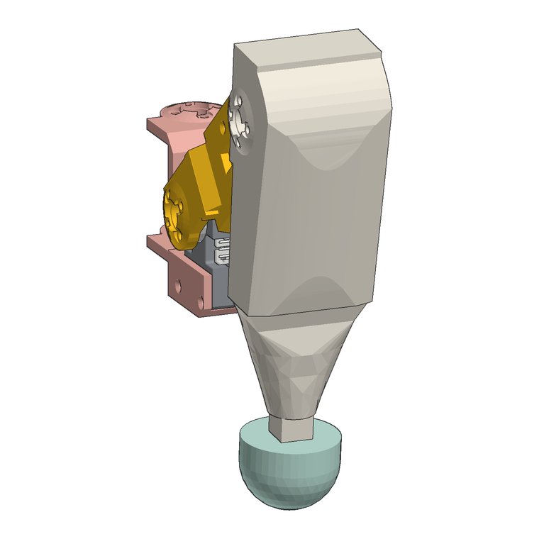
Check: stage C passes. Now print everything else.
Part 4. The body
Step 13. The other three legs
Repeat steps 8 to 12 with motors 22 and 23, 32 and 33, 42 and 43. Keep each leg with its own turn motor (21, 31, 41).
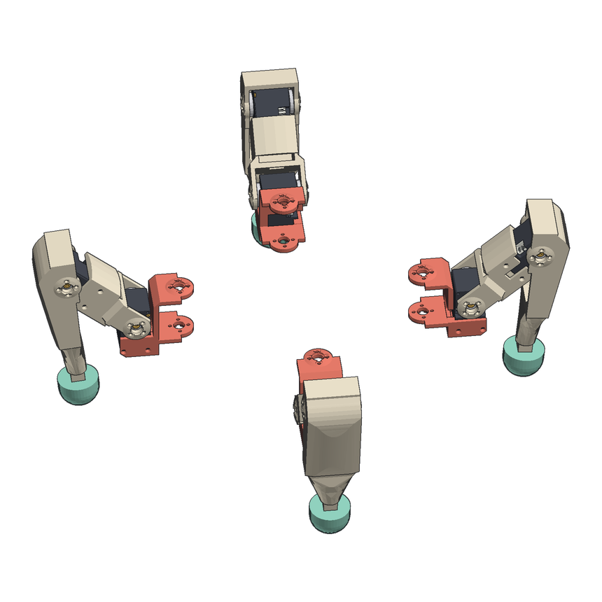
Check: four legs. Each knee and each lift joint swings freely.
Step 14. Chassis: nuts and main fuse
- Slide an M3 nut into each of the four slots in the two bars inside the chassis, from the side that faces the battery opening. A dab of glue on the outer face of each nut keeps it in.
- Switch off and unplug the supply. Open BP2 and take wire 5 out. Open BG and take wire 7 out.
- Lay the main fuse holder with BP1 and BP2 on the belly floor at the robot's left. Tie it to the two little bridges there with a cable tie. Leave BP2 and BG loose, within reach of the battery opening. The XT30 lead hangs out through the opening.
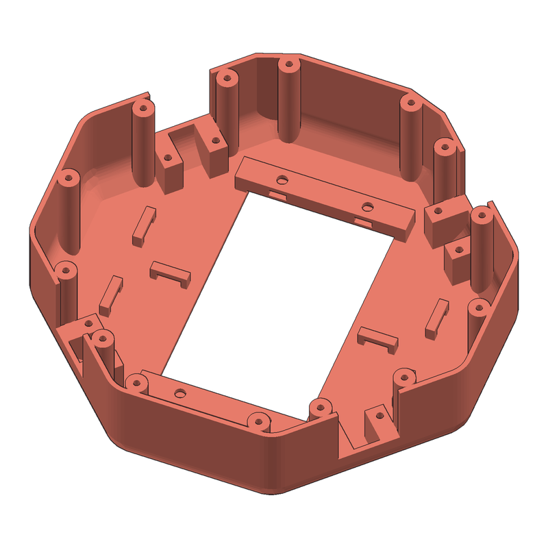
Check: four nuts in. The fuse holder cannot slide. BP2 and BG can be pulled out through the battery opening.
Step 15. Turn motors into the chassis
Motors 11, 21, 31, 41: front right, front left, back right, back left. "Right" is the robot's own right, with its eyes facing forward.
- Seat each motor in its corner slot: short end (the horns) pointing out of the corner, sockets up.
- Turn the chassis over. Two M2 x 6 pan-head screws up into each motor, eight in all. The holes are deep: the screwdriver's shaft must be 4 mm or thinner.
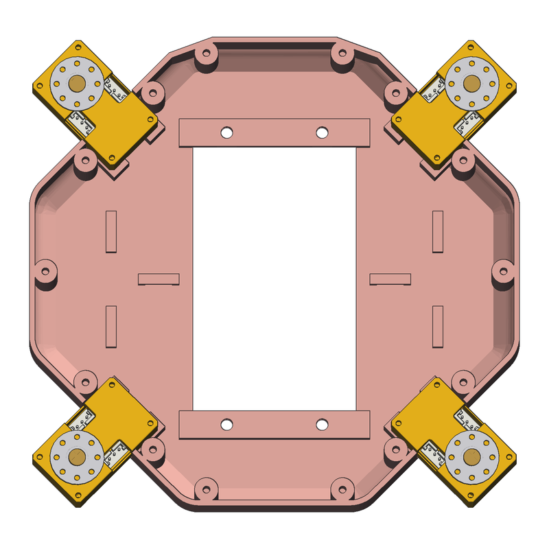
Check: each motor sits flat on its pad. Eight screws in.
Step 16. Deck
- Lower the deck onto the chassis. The four motors' sockets show through the deck's corner cut-outs.
- Two M2 x 6 pan-head screws down into each turn motor, eight in all.
- Fourteen M2.5 x 8 pan-head tapping screws into the chassis posts.
- Drop an M2.5 nut into the slot in each of the four small blocks at the deck's left and right edges. Put a square of tape over each slot.
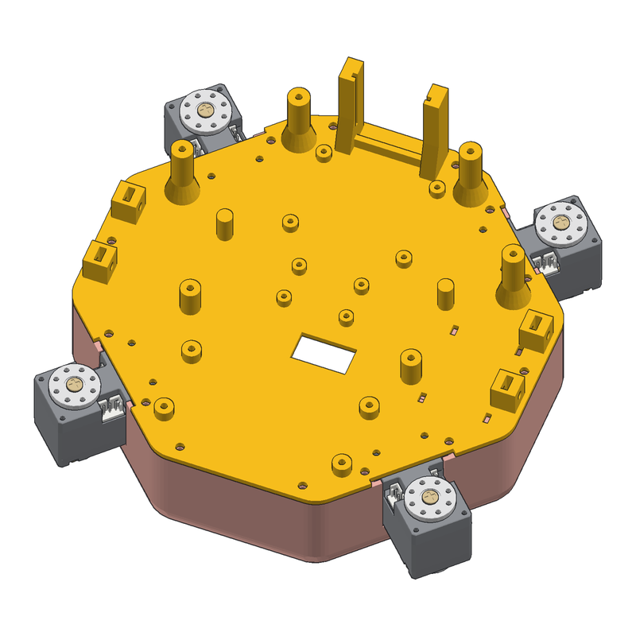
Check: 8 + 14 screws in. The deck does not rock. Four nuts taped in.
Step 17. Motion sensor and hub tray
- Motion sensor. Sit it on its four small posts in the middle of the deck, long side across the robot, with the printed "X" arrow pointing to the robot's front. If the arrow can only point sideways, write down which way: the software needs to know. Two M2 x 6 screws in opposite corners. Plug the 4-wire cable into it and lay the cable toward the back.
- Thread wires 5 and 7 down through the slot in the deck. Reach in through the battery opening: wire 5 into BP2, wire 7 into BG.
- Sit the hub tray on its two posts and two pads, over the motion sensor, tabs toward the back. Two M2.5 x 6 screws.
- Lay hub lead 1 toward the front right corner, 2 front left, 3 back right, 4 back left.
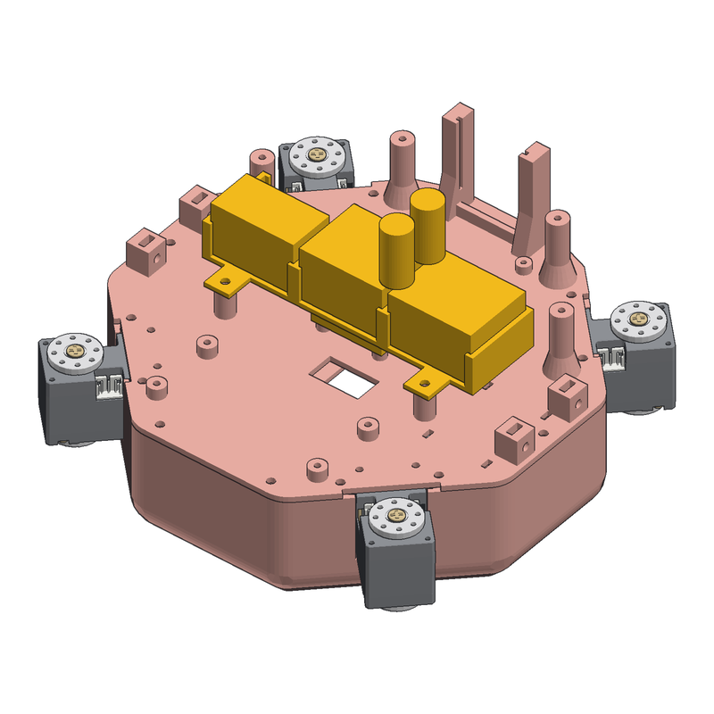
Check: the sensor does not move. Pull wires 5 and 7 at both ends: they hold. Each hub lead reaches the sockets of its corner's motor with slack.
Step 18. Legs onto the turn motors
For each leg, plugs first, fork second:
- Plug that corner's hub lead into one socket of the turn motor. Plug the lead from the leg's lift motor into the other socket. The two sockets are the same.
- Take out the turn motor's two centre screws. Slide the hip bracket's fork over its horns from outside. Centre screws back.
- Point the leg straight out along its corner. Eight M2 x 6 pan-head screws: four from above, four from below.
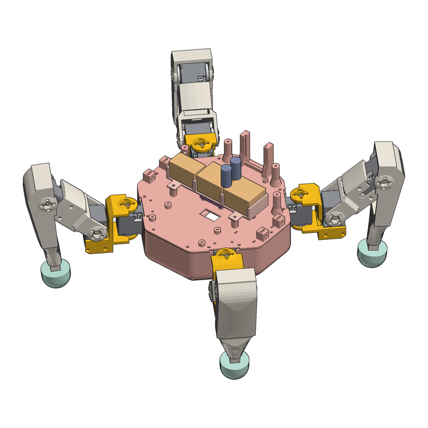
Check: each leg swings left and right by hand without touching the chassis. Both leads at each corner have slack at both ends of the swing, and neither is under a fork arm.
Step 19. Brain
- Card. On your computer, download "Armbian Minimal, vendor kernel" for the Radxa ZERO 3 from armbian.com and write it to the card with the Armbian imager. Type your wifi name and password, a user name and a password into the imager. Push the card into the brain.
- Stick the heatsink on the largest chip.
- Press the small adapter board (Qwiic SHIM) onto header pins 1 to 6. Radxa's pin picture shows which end is pin 1: docs.radxa.com. SparkFun's page shows how the board sits: sparkfun.com. One pin out of place puts 5 V where 3.3 V belongs. Compare with both pictures before you go on.
- Lift the tiny latch of the brain's ribbon socket, push the narrow end of the camera ribbon in, close the latch.
- Four M2.5 x 6 screws hold the brain on its posts at the back of the deck, pin rows toward the back, USB sockets toward the front.
- Plug the sensor's cable into the adapter board. Slide the ribbon forward under the hub tray, over the motion sensor.
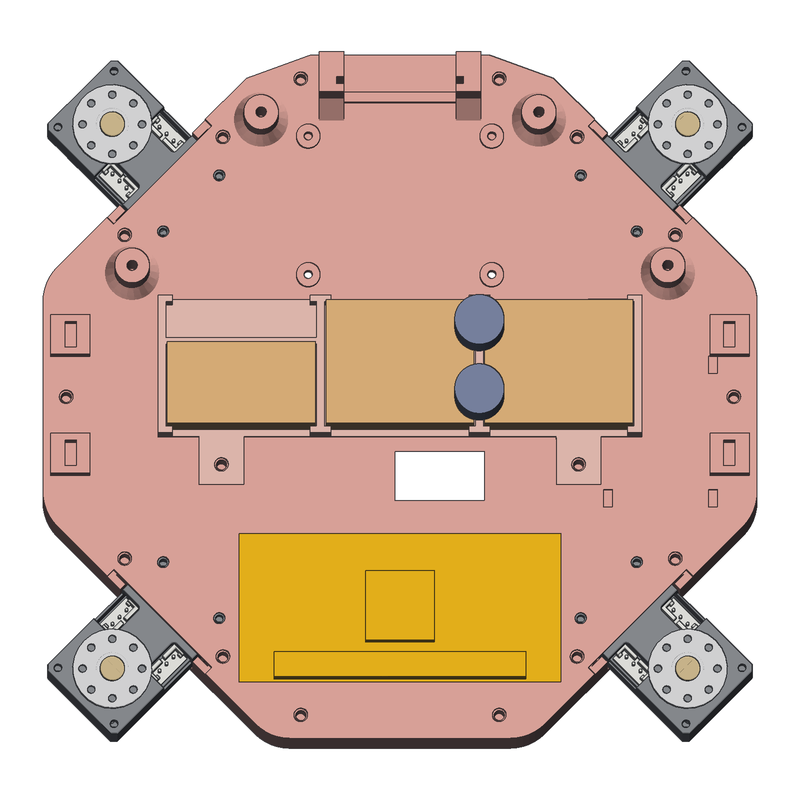
Check: the brain's pins are at the back. The adapter board sits on pins 1 to 6 exactly. The ribbon is latched and has no sharp fold.
Step 20. Bus adapter and 5 V converter
- Bus adapter on its four posts at the front of the deck. Four M2 x 6 screws. Plug its cut cable into its motor socket.
- 5 V converter flat on the deck at the right, between its two pairs of slots. Two cable ties through the slots.
- Only after test B3 has passed: USB-C power lead, red into U+, black into U-. Plug it into the brain's socket marked for power (USB-C 1, the "OTG" one).
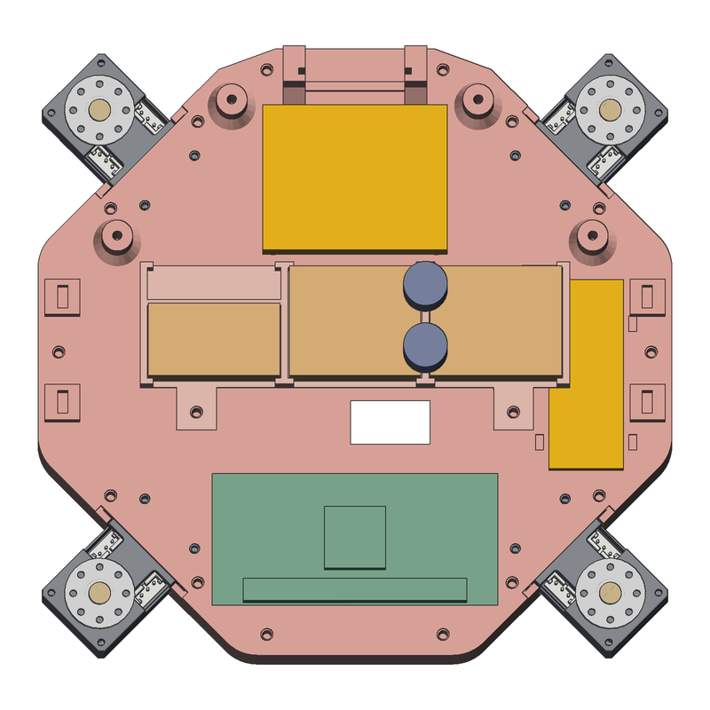
Check: converter tied down. Its jumper is still on 5 V.
Step 21. Camera
Slide the camera board down into the grooves of the two rails at the front of the deck, lens forward. Latch the wide end of the ribbon into the camera's socket. Put a strip of tape across the top of the rails so the board cannot lift.
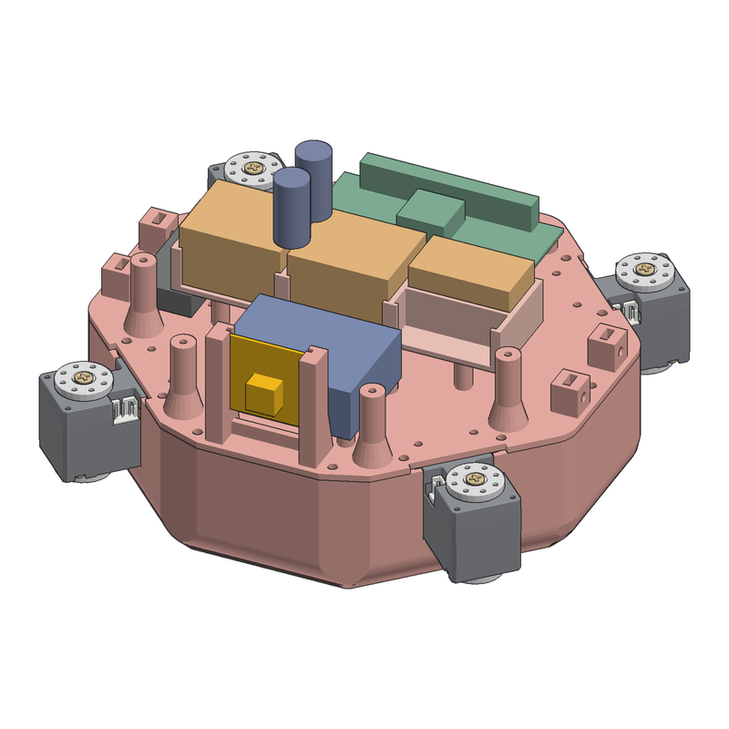
Check: the lens points forward. The ribbon has no sharp fold.
Step 22. Fuse shelf
- Four M2.5 x 8 screws hold the shelf on its four tall posts, above the bus adapter.
- Tie the five chain fuse holders in a bundle, three under two, with two cable ties. Tie the bundle to the right half of the shelf.
- Tie the USB hub to the left half. Short USB cable from the brain's second socket (USB-C 2) to the hub's "IN". Short USB cable from the hub to the bus adapter.
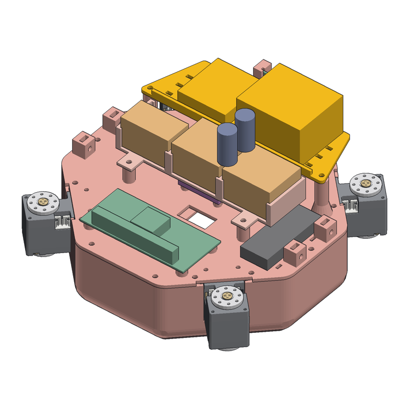
Check: nothing on the shelf can slide. Each fuse can still be pulled out of its holder.
Step 23. Belly
Look in through the battery opening.
- BP1, BP2 and BG closed, each wire pulled to check.
- Tie the low-battery alarm to the two bridges at the robot's right. Set it to 3.3 V with its button.
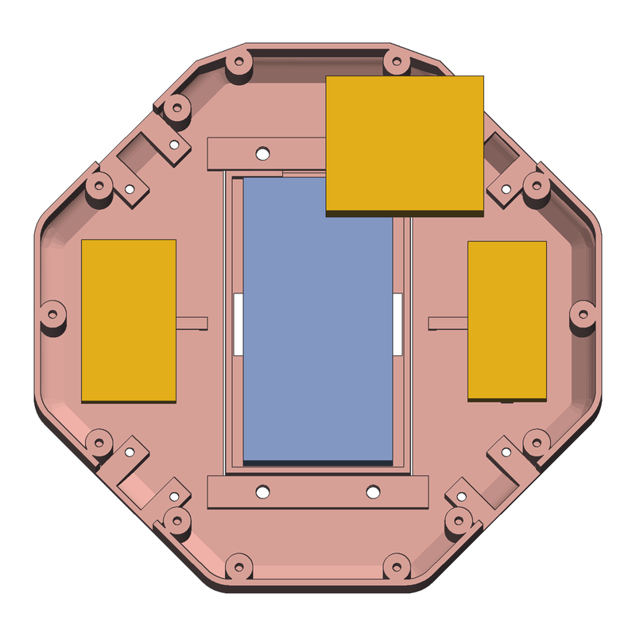
Check: no wire lies across the battery opening.
Now do stage D of the test plan (the brain): plug the supply lead into the robot's battery lead.
Part 6. Head shell and arm
Step 24. Inside the head shell
- Glue the two eyes into their seats.
- Slide the speaker into the two rails on the inside of the back wall.
- Push the switch's threaded neck through the round hole from inside. Lock washer and nut on the outside. The lever's "on" side up. Wires 5 and 6 stay on it.
- Stick the sound card under the roof with foam tape, microphone up, below the left group of five small holes (left as seen from behind the robot).
- Join the speaker's two leads to the 2-pin plug lead with two 2-way connectors. Plug it into the sound card's speaker socket.
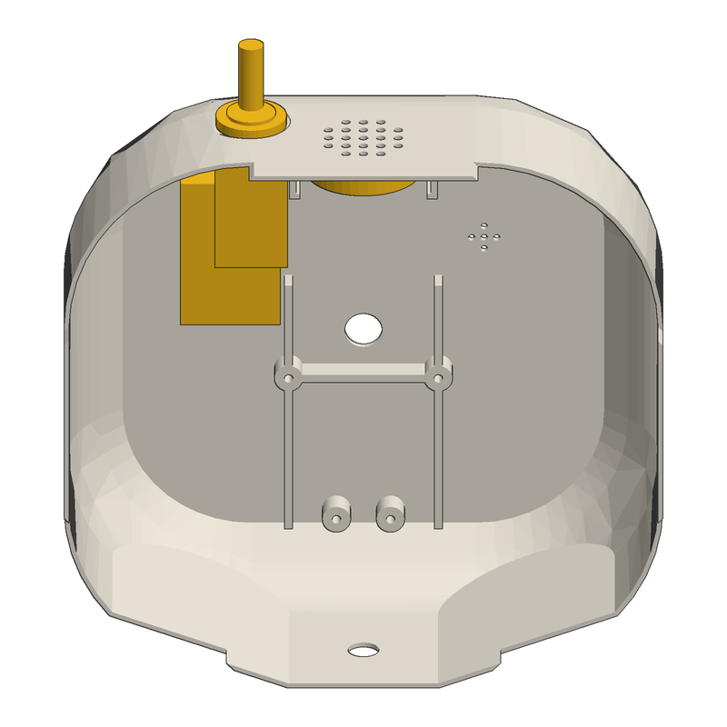
Check: the switch does not turn in its hole. The tape on its two terminals is still whole. The sound card does not peel off when you tug it.
Step 25. Shoulder mount and shoulder motor
- Shoulder mount on the roof: two M2.5 x 8 flat-head screws in the two front holes, two M2.5 x 8 pan-head in the back. Mount first, motor second.
- Motor 51: plug a whole lead in, slide the motor in from the front over the two flush screws, four M2 x 5 flat-head screws.
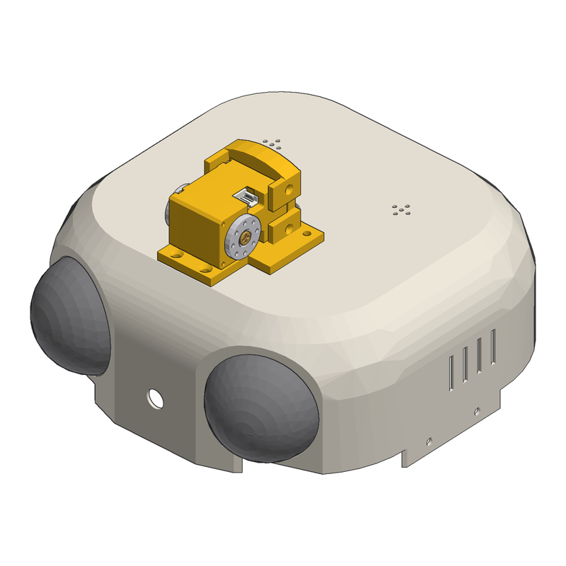
Check: the two front screw heads are flush. The motor slid in without force.
Step 26. Arm
- Motor 52 into the upper arm's pocket (as step 8), with the shoulder motor's lead plugged in and a second whole lead leaving through the slot.
- Upper arm's fork onto the shoulder motor (as step 9), arm level. Eight M2 x 6.
- Motor 53 onto the forearm: two M2 x 5 flat-head screws from below, palm cap on top, two more from above through the cap, one M2.5 x 8 pan-head into the cap's post. Plug in the lead from motor 52.
- Moving finger's fork onto motor 53, claw shut. Eight M2 x 6.
- Forearm's fork onto motor 52, arm straight. Eight M2 x 6.
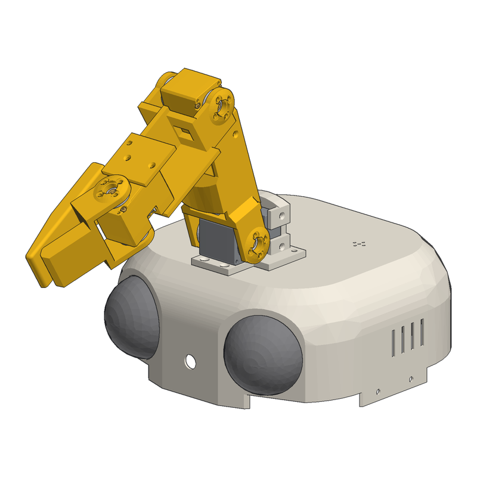
Check: shoulder, elbow and claw all swing by hand. No lead is tight at either end of a swing.
Step 27. Join the shell to the body and close it
- Lengthen hub lead 5: three 150 mm pieces from the other half of the Waveshare cable, both ends folded, joined to the lead's three wires with three 2-way connectors (A1, A2, A3). Keep the tape colours matched. Feed the plug up through the hole in the roof into motor 51's free socket.
- USB lead from the hub to the sound card.
- With the shell lying beside the robot, do stage E tests E1 to E5. Set the zero of every joint that is new since step 12: hold it in its zero pose and run
zero --idwith its number. Zero poses: leg straight out along its corner; thigh level; knee at 90 degrees; upper arm level; elbow straight; claw shut. Then runall-limits. - Lower the shell over the deck. No wire under its rim. Four M2.5 x 8 machine screws through its sides into the nuts.
- Finish stage E (E6 to E8).
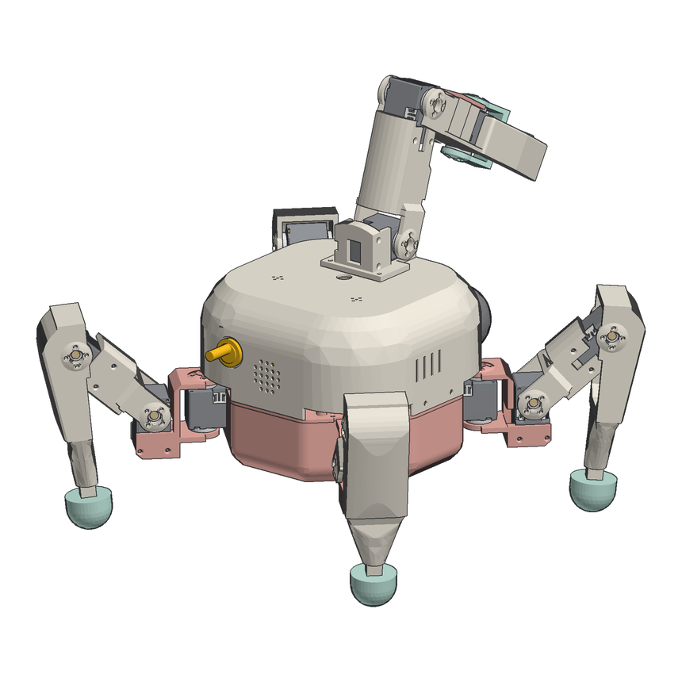
Check: stage E passes. Switch off kills everything.
Part 7. Battery
Step 28. Pack into the belly
- Switch off. Unplug the supply. Change the main fuse from 3 A to 7.5 A (brown).
- Do tests F1 and F2: check and charge the pack on the desk.
- Lay the pack in the door's cradle, leads toward the gap in the end lip. A cable tie through the two slots holds it.
- Plug the alarm onto the pack's small 3-pin plug. Plug the pack's XT30 into the robot's XT30. It only fits one way: never force it.
- Push the door up into the belly. Four M3 x 8 flat-head machine screws.
If the pack's plug does not mate with the robot's battery lead: open BP1 and BG and fit the other XT30 lead instead. Red into BP1, black into BG.
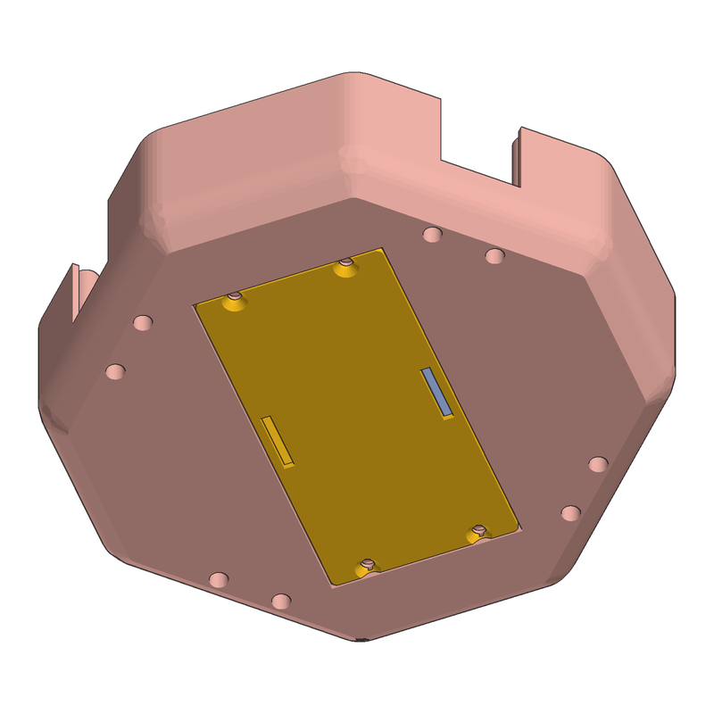
Check: the door is flush. With the switch off, nothing lights. Then go on with test F3.
Step 29. Done
Every day
- Switch off before you touch a joint. Take the pack out to charge.
- If the alarm beeps, stop and charge.
- After the first hour, do test F13 (loose screws).
- A blown chain fuse means that leg was jammed. Find out why before you fit a new one. Never fit a bigger fuse.
Test plan
Do the tests in order. Stop at the first fail and do what the last column says. Do not skip ahead: each stage protects the parts used in the next one.
"Meter" = multimeter. "Supply" = the bench power supply with a current limit (shopping list, tools). "The tool" = servo_tool.py in the zip, folder tools. Run it on a laptop with the bus adapter on USB:
pip install ftservo-python-sdk pyserial
python servo_tool.py --port /dev/ttyACM0 scan
On Windows the port looks like COM5. On a Mac it looks like /dev/tty.usbmodem....
Rules for every powered test
- Wear safety glasses. Keep fingers out of the joints: a motor can pinch hard.
- Until stage F, power comes from the supply, never from the pack.
- Plug or unplug motors only with the power off.
- The robot stands on a box, feet in the air, until test F3.
Stage A. Before you print anything else (one motor, no power)
| No. | What to do | What to measure | Pass | If it fails |
|---|---|---|---|---|
| A1 | Print the test piece in PETG (print guide). Remove the two centre screws of one motor. Slide the motor's long end between the two walls. Slide the fork gauge over both round discs (horns). | Fit by hand | Motor slides in by hand and wobbles less than 0.5 mm. Fork slides over both horns with no force. | Tight: in parts.py raise CHK_IN or ARM_IN by 0.1, export, reprint the piece. Loose: lower by 0.1. |
| A2 | Still on the test piece: drive an M2 x 6 screw into the small hole of the block and an M2.5 x 8 into the large one. Push an M3 nut into the slot and drive an M3 x 8 screw up into it. | Does each screw bite and hold | Each tapping screw turns in with firm force and holds when you pull hard with pliers. The nut slides in and does not turn. | Screw spins freely: lower M2_PILOT or M25_PILOT by 0.05 and reprint. Splits the block: raise by 0.05. Nut will not go in: raise NUT_AF by 0.2. |
| A3 | Measure one motor with the calipers. | Across both horns. Across both centre screw heads. Depth of a case screw hole (push a pin in, mark it, measure). | 29.0 mm, give or take 0.2. 30.2 mm, give or take 0.3. 3.5 mm on the horn side and 4.5 mm on the other side, give or take 0.3. | Stop. Send me the numbers: the screw lengths or the fork width must change before you print. |
| A4 | Plug a lead into a motor and bend its wires sideways. Lay a steel ruler flat on the idler horn (the disc on the back) so it reaches over the socket. | Does the plug or wire touch the ruler | Nothing touches. (The ruler sits where the fork arm will be, 3.0 mm above the case.) | Stop. Do not print forks. The forks need a cut-out over the sockets. |
| A5 | Look at a horn's four small holes. Try one of the screws that came with the motor, then an M2 x 6 tapping screw. | Which screw goes in and holds | The M2 x 6 tapping screw bites and holds. Or: the supplied screw fits and is a machine screw. | If only machine screws hold, buy 120 M2 x 6 machine screws, pan head, in place of the tapping ones. Tell me. |
| A6 | Weigh one motor with its lead. | Grams | 19 to 23 g Maker document | Note the real figure for test E6. |
| A7 | Supply at 1.00 A limit. Clip it across one wire of a spare motor lead (plug pin to plug pin). Meter on millivolts across that same wire. | Millivolts | 22 mV or less: use 3 A chain fuses. Calculated 0.15 m x 0.134 ohm per m = 20 mV | 23 to 35 mV: the wire is thinner. Use the 2 A chain fuses and tell me. Over 35 mV: stop and ask. |
Stage B. One motor on the desk
Set up: bus adapter on the laptop's USB. Supply set to 7.4 V, limit 0.5 A, wired as in build guide step 6. One motor on one hub lead. No brain yet.
| No. | What to do | What to measure | Pass | If it fails |
|---|---|---|---|---|
| B1 | Before anything else: hub built, nothing powered. Meter on the beep setting between any plus connector and any ground connector. | Beep | A short beep while the capacitors fill, then silence and more than 1,000 ohm | A wire is in the wrong bay. Find it. |
| B2 | Supply on, limit 0.3 A, no motor. At the plug of each of the five hub leads, meter on volts. | Volts from each pin to a ground connector | Middle pin = supply voltage within 0.1 V. One outer pin = 0 V. Same side on all five leads. | Re-seat that lead's wires. Never use a lead that differs from the others. |
| B3 | Power the 5 V converter with its output not yet joined to the brain's lead. | Volts across U+ and U- | 4.9 to 5.3 V | 5.9 to 6.1 V: move the converter's jumper to 5 V and repeat. Anything else: replace the converter. |
| B4 | First with the adapter's cable pulled out of the adapter: plug in one motor, switch on. Then switch off, plug the cable back into the adapter, switch on, run scan. |
Supply current with the adapter unplugged. Then the reply. | 15 to 30 mA. Then motor 1 replies. | 0 mA: the two outer wires are the wrong way round. Power off. On all five hub leads swap the yellow-taped and the bare wire between the data bay and the ground bay, and move the yellow tape. Over 100 mA: power off at once, check the middle wire. |
| B5 | Run read --id 1. |
Firmware version. Voltage, temperature. | Firmware 3.43 or newer. Voltage within 0.3 V of the supply. | Older firmware: the "zero" command may not exist. Ask the seller before going on. |
| B6 | Run setup --new-id 11. Power off, wait 5 s, power on. Run read --id 11. |
The settings after the power cycle | All read back as written: current limit 231, torque limit 600, temperature limit 65. | The tool prints which value did not stick. Run setup again. If it fails twice, stop. |
| B7 | Supply limit 2.5 A. Run move --id 11 --deg 20. While it moves back with --deg 0, hold the horn still with pliers (cloth in the jaws) for 5 s. |
Supply current. Time until the motor gives up. | Current stays at 1.6 A or less. The motor lets go within 3 s. Case under 50 C to the touch. | Does not let go: run setup again, repeat. Still not: do not build chains. Tell me. |
| B8 | Run centre --id 11. Then fit nothing yet. |
Position reported | 2,048, give or take 5 | Repeat. If it will not hold the middle, the motor is faulty. |
| B9 | Repeat B4, B6 and B8 for the other 14 motors, one motor connected at a time. Write its number on each. | 15 motors numbered 11 to 53 | A motor that fails goes back to the seller. |
Stage C. One leg
Print one hip bracket, one thigh, one shin and one foot first. Build one leg (build guide steps 8 to 12).
| No. | What to do | What to measure | Pass | If it fails |
|---|---|---|---|---|
| C1 | Power off. Pull every wire in every lever connector, about as hard as lifting half a litre of water. | Does any wire move | None moves | Strip again, fold double, clamp again. |
| C2 | Power off. Move each joint of the leg by hand through its whole range. | Slack in the lead at the tightest point | 10 mm or more everywhere. Nothing pinched. | Re-route the lead. If no route works, tell me. |
| C3 | Leg clamped to the desk. Supply 7.4 V, limit 2.5 A. scan. |
Replies. Supply current. | Three motors reply. 40 to 90 mA. | Find the bad plug: unplug the last motor, scan again. |
| C4 | limits --id for each of the three motors with the angles the build guide gives. Then move each joint slowly to both ends. |
Does any part touch another | No contact at either end | Narrow that limit by 5 degrees. |
| C5 | Hold the knee still by hand for 5 s while it tries to move. | Supply current. read shows voltage at each motor. |
Under 1.6 A. Third motor's voltage within 0.4 V of the first. | Re-seat plugs. Replace the lead. |
| C6 | looptest --hz 50 --seconds 200 --write |
Late cycles | 99.9% of cycles on time. No failed reads. | Try another USB port and a shorter USB cable. |
| C7 | Weigh the finished leg. | Grams | Within 10% of 95 g Measured in CAD | Note it for E6. |
Only after stage C passes: print the rest.
Stage D. The brain
After build guide step 23, head shell not yet on. Supply 7.4 V, limit 1.5 A, plugged into the robot's XT30 lead.
| No. | What to do | What to measure | Pass | If it fails |
|---|---|---|---|---|
| D1 | Write the system to the card (build guide step 19). Boot. Log in over wifi. uname -r. |
Kernel name. Supply current. | 6.1.115-vendor-rk35xx. 0.2 to 0.7 A at 7.4 V. |
No wifi: check the name and password in the imager. Over 1.0 A: power off, check the 5 V lead. |
| D2 | sudo i2cdetect -y 3 |
Sensor address | 6a shown |
Check overlays= in /boot/armbianEnv.txt. Re-seat the press-on adapter. |
| D3 | Take 100 pictures at 640 x 480. Repeat once the head shell is on (after step 27). | Log line with imx219. Frames per second. Dark corners. |
Sensor found. 30 per second. No dark corners. | No camera: flip the ribbon over, then check the overlay name. Dark corners: tell me (the hole would grow to 9 mm, a look change). |
| D4 | Plug in the sound card. arecord -l, aplay -l. Record 10 s and play it. |
Card listed. Sound. | Card shows with no install. Speech is clear at 1 m. | Try another USB port on the hub. |
| D5 | USB meter between brain and hub. Play speech at the loudest setting you will use. | Current | Under 450 mA | Lower the volume cap. |
| D6 | Camera on, wifi busy, speaker loud. Meter across U+ and U-. | Volts | 4.85 V or more | Shorten the brain's power lead. Lower the volume. |
| D7 | Everything running. free -m |
"available" | 256 MB or more | Trim services. If still short, the 2 GB brain. |
| D8 | Run C6 again, on the brain, through the hub, with camera and sound running. | Late cycles in 15,000 | Fewer than 15 | Tell me: the motor data line then moves to header pins 8 and 10. |
Stage E. Whole robot on a box, feet in the air
Supply 7.4 V. Start with the limit at 3 A.
| No. | What to do | What to measure | Pass | If it fails |
|---|---|---|---|---|
| E1 | scan |
Replies | 15 of 15, each number once | Unplug one chain at a time to find the missing or double number. |
| E2 | all-limits |
Limits stored | 15 lines ending PASS | Run it again for the motor that failed. |
| E3 | read |
Idle current on the supply | 0.25 to 0.45 A for the motors | One motor much higher: check it turns freely. |
| E4 | move each joint 10 degrees and back, one at a time. |
Any jump. Which way it turns. | No jump over 5 degrees. Write down which way is plus for each motor. | Torque off (off). Check that motor's centre (B8) and how its fork sits. |
| E5 | With motors holding a pose, flip the switch off. | Motors | All limp within 1 s. Supply current 0. | Do not use the robot until the switch is replaced. |
| E6 | Weigh the whole robot with its pack. | Grams | 1,300 g or less. Measured in CAD 1,253 g | Heavier: tell me the figure. Joint loads rise with weight. |
| E7 | Close the head shell. Camera, sound and motors holding for 20 minutes. Read /sys/class/thermal/thermal_zone0/temp. |
Brain temperature | 75 C or less (reads 75000) | Fit the heatsink if not fitted. Then tell me. |
| E8 | Shell closed, 5 m from the router, one wall between. ping -c 500 the router. |
Lost pings | Under 1% | Tell me: an outside antenna is the fix. |
Stage F. Battery, then the floor
| No. | What to do | What to measure | Pass | If it fails |
|---|---|---|---|---|
| F1 | Pack on the desk, not connected. Plug the alarm onto its small plug. | Volts per cell. Which wire is plus. | Each cell 3.3 to 4.2 V. Cells within 0.05 V of each other. Red is plus. | Cells apart: balance charge first (F2). Never force a plug. |
| F2 | Charge as in the wiring page. | End voltage. Temperature. Time. | 8.15 to 8.25 V. Cells within 0.03 V. Under 40 C. Under 4 hours. | Stop. Do not use a pack that gets hot or will not balance. |
| F3 | Switch off. Fit the 7.5 A main fuse. Plug the pack in. Switch on. Repeat E1, E4 and E5 on the pack, still on the box. | As before. read shows voltage at each motor. |
As before. No motor under 6.0 V. | Power off. Check the main fuse and both belly connectors. |
| F4 | On the floor. Stand up from lying flat. | Any motor that lets go | Stands in 3 s. None lets go. | Lower the body less far at the start. Tell me. |
| F5 | Stand still for 5 minutes. | Sum of the motors' current readings. Hottest motor. | Under 1.5 A. Under 45 C. | Tell me. |
| F6 | Walk for 1 minute, three times. | Average of the summed current readings | 5.6 A or less | Slow the gait. If still over, tell me (a pack with stronger cells is the fix). |
| F7 | Walk for 10 minutes. | Hottest motor. Pack, switch, fuse holders and first lead of each leg, with the infrared thermometer. | Motors 55 C or less. Everything else 50 C or less. | Hot motor: keep each foot within 30 mm of its hip. Hot lead: 2 A chain fuses. Hot pack: tell me. |
| F8 | Start at 6.8 V. Walk 60 s. | Lowest motor voltage. Does the brain stay up. | 5.9 V or more. No restart. | Raise the software stop voltage by 0.2 V. |
| F9 | Run the pack down on the box. | Voltage when the software sits the robot down. Alarm. | Sits down at 6.6 V. Alarm sounds at 3.3 V per cell. | Fix the software limit before any more floor use. |
| F10 | Just charged. Lift the robot 2 cm and let it drop onto its feet, five times. Push each leg by hand. | Highest motor voltage | 8.4 V or less | Charge to 4.05 V per cell. Add two more capacitors (spare ports on G3 and P3). |
| F11 | Stand. Press down on the body until it sinks. | How far a leg gives under 1 kg | Note the figure, d. Allowed drop height = 15 x d until tested. | No fail. This sets the drop limit. |
| F12 | Push a standing foot sideways on your real floor. | Does the foot slip or come off its peg | Does not come off. Slips only above a firm push. | Came off: glue the foot. Slips: tell me (softer plastic or a rubber sole). |
| F13 | After the first hour of running: check every screw you can reach. | Loose screws | None | Tighten a quarter turn. A screw that spins has stripped: tell me. |
| F14 | Say 20 test phrases at 1 m, standing still, then while the legs move. | Phrases your speech software understands | 18 of 20 still. 15 of 20 moving. | Foam ring round each microphone. Then tell me. |
Not proven yet
A computer checked the shapes, the sums and the parts' data sheets. It cannot print, plug or switch on. Everything below is still open. Each line names the test that closes it.
Could stop the build (find out first, they are cheap)
| What is not known | Why it matters | Closed by |
|---|---|---|
| Do printed parts fit the real motor | All fits are drawn from Feetech's model with 0.25 mm of room. Your printer decides | A1, A2, A3 |
| How high the motor plug stands | There are 3.0 mm under each fork arm. No maker gives the plug's height. If it stands proud, every fork needs a cut-out | A4 |
| Are the horn holes plain or threaded | Decides which 120 fork screws to buy. 1.6 mm suits both | A5 |
| How thick the motor lead's wires are | Decides 3 A or 2 A chain fuses | A7 |
| Which outer wire of the plug is data | Feetech names the pins but not the side | B4 |
| Does the tool talk to a real motor | servo_tool.py was tested on a software model of the motor bus, built from Feetech's published addresses. Not on a motor |
B4 to B8 |
| Does the motor's own current limit let go in time | Taken from another open robot with this motor, not from Feetech | B7 |
| Does the idler horn stay on with its centre screw out | Needed to slide a fork on | Step 9. If not: spread the fork arms 0.4 mm by hand instead |
| Is the brain in stock | Sold out at the two sellers I could read on 18 Nov 2026 | Look before stage 3 |
Could make it work badly (found once it is built)
| What is not known | Closed by |
|---|---|
| Lead slack in a real leg | C2 |
| Motor data timing over USB on the brain, 50 times a second | D8 |
| This exact system image with the camera, sound card and sensor | D1 to D4 |
| Current on the brain's one USB port with the speaker loud | D5 |
| Whether 1 GB of memory is enough | D7 |
| Real weight. Wiring, switch and fuse holders are guessed at 1,253 g in all | E6 |
| Brain heat in the closed shell | E7 |
| Wifi inside the shell | E8 |
| Motor heat when walking. Two-leg loads reach 5.9 kg cm against a 3.7 rating | F5, F6, F7 |
| Pack heat and run time | F6, F7 |
| Voltage spikes on a full pack | F10 |
| How hard a landing the legs take | F11 |
| Grip of the feet on your floor | F12 |
| Whether screws stay tight | F13 |
| Hearing with motors running | F14 |
Drawn from a guess, not from a data sheet
These parts have no maker drawing I could open. Each is drawn at a likely size and has room to spare, but measure when it arrives.
- Where the USB sockets and the ribbon socket sit on the brain. The camera ribbon's path is about 130 mm against a 150 mm ribbon. If it does not reach with slack, buy a 300 mm "Pi Zero" camera ribbon.
- Sound card: size, where its microphone is, and its speaker plug (I assumed a 2 mm 2-pin plug).
- Speaker depth against its 6 mm seat in the shell.
- Fuse holders, switch body, low-battery alarm, USB-C plug length.
- The pack's plug: which half of the XT30 pair it carries. That is why you buy a mating pair.
- Motor stall torque at 7.4 V. 15 kg cm is a reseller's figure. Feetech's own page gives 10 kg cm at 6 V.
- Prices marked "Estimate" in the shopping list, and shipping and import duty.
Not part of this job
- The walking software. Before any floor test your program needs: a stop at 6.6 V, a low torque limit while falling, and a watchdog that lets the motors go if commands stop for a quarter of a second.
- A robot description file and measured motor data for training. Test E6 gives the masses.
- Plastic creep over months. No usable numbers exist.
Decisions that are yours
- Cost. About $1,380 on the shopping list, plus $60 to $220 shipping and duty, against a $500 target for parts. Parts alone are about $745.
- The switch. A small metal toggle on the back of the head replaces the rocker. It is the cheapest switch I found with a real battery rating and screw terminals. It is the one change you can see.
- Charging. The pack comes out to charge on a $40 charger. Safer, but four screws each time.
- Brain. 1 GB as asked. If only the 2 GB board can be bought, it fits the same posts for $7 more.
- Stance. If test F7 shows hot motors, the fix is feet 12 mm closer in. That changes the look and six poses, so I did not do it.
- Motors. I priced them at $29 each from a seller I could read. Feetech's own Alibaba store may sell a set of 15 for much less.